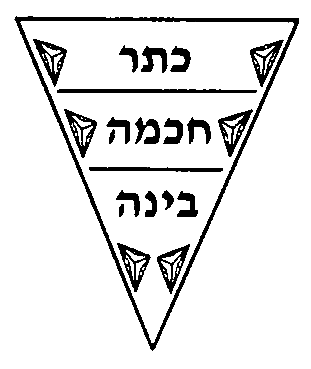
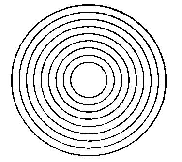

Pardes Rimmonim, English translation with the Hebrew.
We named it "The Reason for the Emanation" because in it is explained the reason why the sefirot were ten — no fewer and no more — and the reason for the existence of emanation itself. Its chapters number seven.
2:1:1 The Second Gate is the Gate of the Reason for the Emanation:
השער השני הוא שער טעם האצילות:
2:1:2 On the reason why ten and not more. After we occupied ourselves in the preceding Gate with the necessity of the Emanation, and with its being agreed among the Kabbalists that they are ten, no fewer and no more, and set out their matter and their names, we have seen fit in this Gate to give a reason for their being ten, and for the matter of the Emanation as a whole, in general, with the help of God.
בטעם למה עשר ולא יותר. ואחר שנתעסקנו בשער הקודם בהכרח ענין האצילות ושהוא מוסכם בין המקובלים שהם עשר לא פחות ולא יותר וסדרנו עניינם ושמותם, ראינו בשער זה לתת טעם היותם עשר ואל ענין האצילות כלו בכלל בעה"ו:
2:1:3 Chapter One:
פרק ראשון:
2:1:4 As we were reveling in the garden of delights that is the books of the sages of this wisdom, we found that the sage Rabbi Yehudah Chayyat, in his book Minchat Yehudah (fol. 9b), wrote, on the reason for the ten, one reason in the name of Rabbi Azriel, with its rebuttal beside it. And these are his words: "Know that every point comes with three diameters [kotarim] — length, breadth and depth — and when you multiply them by one another, in the manner of a square number, the three make nine; and with the place that bears them they are ten." Thus far the words of Rabbi Azriel, of blessed memory. And Rabbi Yehudah objected to him, and these are his words: "This reason does not seem good to me, on two grounds. The first: the premise is not true, because the diameters mentioned have quantity, and the point has no quantity, for it is the end of the line. And further: would it be good in the eyes of YHVH that the diameters mentioned, by which body is defined, be attributed to the Emanation? For in divinity, body [geshem, which also means 'rain'] 'is over and gone.'" Thus far [his] words.
בהיותנו משתעשעים בגן עדני ספרי החכמים בחכמה הזאת מצאנו החכם רבי יהודא חייטי בספרו מנחת יהודא ד"ט ע"ב כתב בטעם העשר טעם א' משמו של רבי עזריאל ותשובתו בצדו. וז"ל דע כי כל נקודה באה בג' קוטרים אורך ורוחב ועומק וכשתכם זה בזה בדרך מספר מרובע הג' עושים ט' ועם המקום הסובלם הם עשר עכ"ל הר"ר עזריאל ז"ל. והשיג עליו רבי יהודא וז"ל ולא ייטב בעיני הטעם הזה משתי סבות. הא' כי ההקדמה אינה אמיתיית מפני שהקוטרים הנזכר הם בעלי הכמות והנקודה אין לה כמות כי היא סוף הקו.ועוד הייטב בעיני ה' שהקוטרים הנזכר אשר בהם יגדר הגשם יוחסו אל האצילות, והלא באלקות הגשם חלף הלך לו עכ"ל.
2:1:5 And because his words are somewhat obscure — particularly in the first difficulty, where he says "the point has no quantity," etc. — we have seen fit to explain his intent. The matter is this: every corporeal thing has length, breadth and depth, and there is no corporeal thing in the world that lacks these three, for they are the dimensions of body [gidrei ha-guf, 'what defines a body']. Were one to conceive of two of the dimensions of body alone, namely length and breadth without depth, it would be called a plane [shetach], meaning something like color spread [shatuach] over the face of paper, of which length and breadth can properly be said, but not depth; and therefore it is called a plane. And when we conceive of one dimension of body alone, namely length without breadth, it is called a line [kav], meaning a line of length, stripped of breadth and all the more of depth. And when we conceive of the negation of all three dimensions of body, that thing is called a point [nekudah]: that is, it has neither length nor breadth nor depth. And this is not because it could actually exist so; rather, it is called a notional point [nekudah tzurit] — that is, the notion [tziyur] of the negation of the dimensions of body, and not that it actually exists. With this premise the intent of Rabbi Yehudah will be understood, in objecting to Rabbi Azriel that his words contradict themselves: for he said "a point comes with three diameters," and this is impossible, since a point has neither length nor breadth nor depth, but is "the end of the line" — meaning, as we have explained, that it is the end of the line, which is likewise the negation of length; so the point turns out to have no diameters at all. And his statement that it is the end of the line is not agreed among the masters of astronomy [ba'alei ha-tekhunah]. For some say that two points or more, gathered together, make a line; and some say that even if all the points in the world were gathered, they would not make a line: since the point has no length at all, it is impossible that length should come to be through it. But this is not our principal concern.
ומפני שדבריו סתומים בקצת בפרט בקושיא הראשונה באמרו הנקודה אין לה כמות וכו' ראינו לבאר כונתו. והענין הוא כי כל גשמי יש לו אורך ורוחב ועומק ואין לך דבר גשמי בעולם שלא יהיו לו ג' אלו כי הם גדרי הגוף. ואילו יצוייר ב' גדרי הגוף לבדם שהם האורך והרוחב בלא עומק יקרא שטח שפי' כמו גוון השטוח על פני הנייר אשר יוצדק בו האורך והרוחב ולא יצדק בו העומק ולכן נקרא שטח. וכאשר נצייר גדר הגוף א' לבד שהוא האורך ולא הרוחב יקרא קו פי' קו האורך משולל מהרוחב וכ"ש מהעומק. וכאשר נצייר שלילת שלשת גדרי הגוף תקרא הענין ההוא נקודה. והענין שאין לה לא אורך לא רוחב ולא עומק. ולא מפני שיכולה להיות במציאות אלא נקרא נקודה צוריית ר"ל ציור שלילת גדרי הגוף ולא שתהיה במציאות. ועם ההקדמה הזאת תובן כוונת ר' יהודא שהשיג על ר' עזריאל שדבריו סותרים שאמר נקודה באה בג' קטרים, וזה א"א שלנקודה אין לה אורך ולא רוחב ולא עומק אלא שהיא סוף הקו פי' כמו שבארנו כי היא סוף הקו שהוא ג"כ שלילת האורך ונמצא כי הנקודה בלא קטרים כלל. ואומרו שהוא סוף הקו אינו מוסכם בין בעלי התכונה. כי י"א ששתי נקודות או יותר קבוצם יעשה קו. וי"א כי אפי' יקובצו כל הנקודות שבעולם לא יעשה הקו אחר שהנקודה אין לה אורך כלל א"א שיתהוה על ידה האורך. ואין זה מעקר העסק שלנו.
2:1:6 Now Rabbi Yehudah resolved his two objections to the view of Rabbi Azriel by way of number, in Rabbi Azriel's defense; but since the thing is neither seemly nor acceptable, we shall not copy it here. It seems right to us to argue in Rabbi Azriel's favor, and to say: it is true that the Emanation is neither body nor corporeality. Nevertheless, body and corporeality proceed from it. And just as the masters of the Kabbalah held that the four elements — water, fire, air and earth — are hinted at in the Sefirot (Gedulah being the element of water, Gevurah the element of fire, Tiferet the element of air, and Malkhut the element of earth), not because these are literally elements, God forbid, but because they are the root of the elements, and the elements are created from their root: so it is with the dimensions of body. The point is not that there is literally body above, nor that the dimensions of body can properly be said of the Sefirot; rather, since body is created from them and they are its root, the dimensions of body are found in the roots as titles. Therefore we may properly speak, above, of "length, breadth and depth," meaning the power by which length is made, the power by which breadth is made, and the power by which depth is made. And likewise each of these three powers performs three further actions, so that they turn out to be nine; and that which brings the existence of body into being, before it comes into its dimensions, is a tenth power. Thus ten powers are necessary above, and these are the ten Sefirot. And it is not that Rabbi Azriel's view is that the dimensions of body exist above, Heaven forbid. Further, it seems that the difficulty was none at all to begin with, for Rabbi Azriel did well in likening the Emanation to the dimensions of body, since permission for this has already been given.
והנה ר"י לשתי השגותיו על דעת ר"ע תירץ בדרך מספר לזכות ר' עזריאל ולפי שאין הדבר נאה ומתקבל לא נעתיק אותו הנה. ונראה לנו להפך בזכות ר' עזריאל ונאמר כי אמת שהאצילות אינו גוף ולא גשמות. עכ"ז ממנו נמשך הגוף והגשמות וכמו שבעלי הקבלה האמינו היות ד' יסודות שהם מים אש אויר עפר רמוזים בספירות. שהם גדולה יסוד המים, וגבורה יסוד האש, והת"ת יסוד האויר, והמלכות יסוד העפר. ולא מפני שהם ממש יסודות ח"ו. אבל הם שורש היסודות, והיסודות נבראים משרשם. כן הענין בגדרי הגוף כי אין הענין שיהיה ממש גוף למעלה ולא שיצדק בספירות גדרי הגוף אלא אחר שהגוף נברא מהם והם שרש אליו נמצאו בשרשים על דרך הכינוי מציאות גדרי הגוף. ולכן יוצדק למעלה אמרנו אורך ורוחב ועומק. והכונה הכח שבו נעשה האורך, והכח שבו נעשה הרוחב, והכח שבו נעשה העומק. וכן כל אחד מג' כחות הללו עושים ג' פעולות אחרות נמצא מציאותם ט'. והממציא מציאות הגוף קודם בואו אל גדריו הוא כח עשירי. הרי שמוכרחים למעלה עשר כחות שהם עשר ספירות. ולא שתהיה סברת הרב רבי עזריאל שיהיו למעלה גדרי הגוף חלילה. עוד נראה כי מתחלה הקושיא אינה כלל כי היטיב רבי עזריאל עם אשר המשיל האצילות לגדרי הגוף שכבר נתן רשות לדבר זה.
2:1:7 And indeed Sefer Yetzirah took this very path in saying "depth of height and depth of below, and height and below, and east and west, and south and north" — these are the dimensions of body; and yet Sefer Yetzirah did not refrain from applying the likeness to divinity, since they are a parable and a likeness for the subject under discussion. And as for the second difficulty, that the point has no quantity: this is no objection. For there is certainly no point that does not have dimensions; and if we said above that the point has no quantity, that is only the notional point, which does not actually exist, whereas a point that actually exists has diameters. If so, this is no objection.
והנה בס"י דרך דרך זו באומרו עומק רום ועומק תחת ורום ותחת ומזרח ומערב ודרום וצפון הם גדרי הגוף, ועכ"ז לא מנע עצמו בס"י לדמותו באלקות להיות שהם משל ודמיון בדרוש. ואל קושיא הב' שהנקודה אין לה כמות, זו אינה השגה. שהרי אין נקודה שלא תהיה בעלת הגדרים ודאי ואם אמרנו לעיל שהנקודה אין לה כמות היא דוקא נקודה צוריית שאינה במציאות והנקודה שהוא במציאות היא בעלת קטרים וא"כ אינה השגה.
2:1:8 And further: because the Emanation is not body or corporeality, he referred to it by the term "point," which is not a body — since the Emanation is the root of body and of its dimensions.
ועוד כי להיות שאין האצילות גוף וגשמות כנה אותו בלשון נקודה שאינה גוף להיות שהאצילות שרש הגוף וגדריו.
2:1:9 And further, he referred to the Emanation by the term "point" to say that, just as the point is unified in its parts and admits of no parts at all, so the Emanation admits of no parts; and even if we speak of parts in it, it is all parable and likeness. Thus far what has seemed right to us to argue in favor of Rabbi Azriel. And now we shall write what Rabbi Yehudah wrote on the reason for the Emanation, and these are his words: "Since the Emanation comes in a point, we must perforce acknowledge that this point has a beginning, a middle and an end [rosh, tokh, sof]. We must acknowledge an end, since we see that, had [things] been created from the side of the power that has no end, they would go on without end and would exist forever; and that was not the intention. And since it has an end, it therefore has a beginning, for there is no end without a beginning and no beginning without an end. But beware of thinking, when I say 'beginning, middle and end,' that a beginning, middle and end in quantity are meant, Heaven forbid; rather, [they are meant] in respect of power, for there is a difference between the cause and the effect. And since each of the three extremities mentioned in the point is composed of the three — for in the beginning there are end and middle, and so in the middle, and so in the end — they come to nine, when we multiply three by three in the manner of a square number; and the place that bears [them], etc." Thus far [his] words.
ועוד כנה האצילות בלשון נקודה לומר כי כמו שהנקודה מתייחדת בחלקיה ואינה מקבלת חלקים כלל כן האצילות אינו מקבל החלקים ואף אם נאמר בה חלקים הכל משל ודמיון. ע"כ הגיע מה שנראה לנו להפך בזכות הרב רבי עזריאל. ועתה נכתוב מה שכתב ר' יהודא בטעם האצילות וז"ל מאחר שהאצילות בא בנקודה יש להודות על כרחינו שיש בנקודה הזאת ראש תוך סוף. יש לנו להודות בסוף מאחר שאנו רואים כי אם היו נבראים מצד הכח שאין לו סוף היו הולכים לבלתי סוף והיו לעולם קיימים ולא היתה זאת הכונה, ומאחר שיש לה סוף אם כן יש לה ראש כי אין סוף בלי ראש ואין ראש בלי סוף. והשמר לך מלחשוב באמרי ראש תוך סוף היות הכונה ראש תוך סוף כמות חלילה, אלא בענין הכח כי יש הבדל בין העלה והעלול. ומפני שכל הג' קצוות הנזכרים בנקודה כלול מן הג' כי בראש יש סוף תוך וכן בתוך וכן בסוף נמצא שעולים תשע כשנכה ג' על ג' בדרך מספר המרובע והמקום הסובל וכו' עכ"ל.
2:1:10 These are some of his words, in brief; and he brought many passages from the Zohar as proof. But since the passages are no proof at all for his words, we have not seen fit to copy them. And the difficulty that should be raised, whether against his words or against the words of Rabbi Azriel, peace be upon him, is this: since the reason for the ten is the point, which has three, each composed of three — then we too may say that each part of the three in each of the three parts is itself composed of the three, and so they mount up without end, from three to three. And if we do not wish to include them [in one another] in this way, then the first inclusion, by which we make three into nine — whence do we have it? This is certainly very strained: so much so that, on account of it, there are those who wished to combine the two views, and said that every point has depth, length and breadth, and each of these three has an end, a middle and a beginning [sof, tokh, rosh], making nine, and the place that bears them makes ten. And I am able to object to the holders of these three views, for I see no place for these things: since it turns out that bodies and limit are what necessitate the existence of the Emanation. And it is not acceptable to say that, because these are necessary dimensions, the Sefirot were compelled to be of this measure; for it is the Sefirot that acted and begot the world and all created entities. Indeed, if the Sefirot were sixteen, the dimensions could exist as sixteen things, four by four. Who ever saw fit to make the bringing-about of the form of the father necessary on account of the existence of the form of the son? Would you say that Reuben had to have hands so that his son should have hands — or, again, that Reuben must have three hands so that his son should have three hands? How can we make the form of the cause necessary on account of the form of the effect? For in truth the cause is the principal thing and the effect is secondary to it; and how can the effect be what necessitates the form of its cause's existence? I wonder at this.
הן אלה קצת דבריו בקצור והביא מאמרים הרבה מהזהר לראיה. ולפי שאין המאמרים ראיה כלל אל דבריו לא ראינו להעתיקם. ומה שראוי להקשות אם לדבריו אם לדברי ר' עזריאל ע"ה הוא כיון שטעם העשר הוא הנקודה אשר הוא בעלת שלש וכל אחד כלול מג' א"כ אף אנו נאמר כי כל חלק מהג' אשר בכל א' מהשלשה חלקים שיהיה כלול מהג' ויעלו לאין תכלית משלש אל שלש. ואם אינו נרצה לכללם בענין הזה א"כ הכללות הראשון שאנו עושין מג' ט' מהיכא תיתי לן. וזה ודאי דוחק גדול. עד שמתוך זה יש שרצו להרכיב ב' סברות יחד ואמר שכל נקודה יש לה עמק וארך ורחב וכל א' מג' אלה יש להם סת"ר הרי ט' והמקום הסובל הרי י'. ובידי להשיג על בעלי שלש סברות אלה כי איני רואה מקום לדברים אלה, שנמצאו היות הגופים והגבול הכרח למציאות האצילות. וזה דבר בלתי מתקבל שנאמר כי מפני שאלו הם גדרים מוכרחים הוכרחו הספירות היות מדתן כך שהרי הספירות פעלו והולידו העולם והנבראים כלם. והרי אם היו הספירות י"ו אפשר שיהיה במציאות הגדרים י"ו דברים ד' על ד'. ומי ראה להכריח המצאת צורת האב מפני מציאות צורת הבן, וכי התאמר הוכרח שראובן יהיו לו ידים כדי שיהיו לבנו ידים או ג"כ לראובן ג' ידים כדי שיהיו לבנו ג' ידים ואיך נכריח צורת הסבה מפני צורת המסובב. כי לפי האמת הסבה הוא העקר והמסובב טפל אליה, והיאך יהיה המסובב הכרח אל צורת מציאות סבתו אתמהה.
2:1:11 And further, as to the words of Rabbi Yehudah, who said that the point has an end, a middle and a beginning, and that each of the three has an end, a middle and a beginning: this too does not come out well. For a middle cannot have an end and a beginning: if it had an end and a beginning it would not be a middle; and of that which is a middle, "end" and "beginning" cannot properly be said, since its beginning is the first beginning and its end is the last end. For "end" and "beginning" here are not a quantitative end and beginning, but the cessation of the power, or its beginning. And how can one say that there is a power that has a cessation of its power, or a beginning of it, other than its final cessation or its first beginning — that is, its very own beginning and end?
ועוד לדברי רבי יהודא שאמר שהנקודה יש בה סת"ר וכל אחד משלשתן שיהיה בהן סת"ר. ג"ז אינו עולה יפה שהרי תוך אי אפשר שיהיה בו סוף וראש שאם יהיה בו סוף וראש לא יהיה תוך ומה שהוא תוך לא יוצדק בו סוף וראש כי ראשו הוא הראש הראשון וסופו הוא הסוף האחרון כי סוף וראש אינו סוף וראש כמותי אלא אפיסת הכח או תחלתו. ואיך אפשר לומר שיש כח שיהיה אפיסת כחו או תחלתו אם לא אפיסתו האחרונה או תחלתו הראשונה דהיינו ראשו וסופו בעצמו.
2:1:12 And further: since "beginning" and "end" mean nothing but the cessation of the power or its beginning, as has been explained, then, since the end is the cessation of the power, how can we speak, in that cessation, of a beginning and a middle? For it is nothing but cessation — the power has ceased — and in cessation there is no beginning and no middle. (Though some of this can be resolved, with strain.) And as with the difficulty he himself raised against Rabbi Azriel — how can the diameters of the corporeal be attributed to the Emanation, "for in divinity," etc. — is it any easier on his own view? How can cessation of power and beginning of power occur in the Emanation? For of divinity no lack of power can properly be said, God forbid, for it is perfect with the utmost perfection. Perforce we must answer this in one of two ways. The first: it is necessary because there is a difference between the Ein Sof and the emanated, like the difference between cause and effect; and so some cessation of power can properly be said of it, since it is necessarily not exactly like the Emanator, having descended from Him and being emanated from Him. And this is no deficiency in the Emanator, God forbid, nor in the emanated; rather, because it is emanated and an effect, it must descend a grade from its cause. This is due to the superiority of the Emanator over the emanated, and for this reason cessation of power can properly be said of it, in a certain respect. Or we may say that there had to be a limit in their action, in order to fulfil the intent of the Emanator, which was that created entities should be finite and subject to cessation. If so, then according to the words of Rabbi Azriel too we may say that limit was necessary in the Emanation, for these reasons. First: because the First Cause is the utmost negation of cessation, both in notion and in quantity, altogether; whereas those emanated from Him are necessarily limited somewhat, in the measure of their descent from before Him, by a notional limit and not an actual limit. Yet relative to the Emanator, who is their cause, from whom we are obliged to negate limit and cessation and all such things, the emanated must have a difference from Him, like the difference of the effect from the cause.
ועוד אחר שאין הכונה בראש וסוף אלא בענין אפיסת הכח או תחלתו כמו שנתבאר א"כ אחר שהסוף הוא אפיסת הכח איך באפיסה ההיא נוכל לומר ראש ותוך שהרי אינו אלא אפס כי אפס הכח ואין באפס התחלה ותוך, עם שאפשר לישב קצת מזה בדוחק. וע"ד מה שהקשה הוא לר' עזריאל כי קטרי הגשמי איך יוחסו אל האצילות כי באלקות וכו'. ולדידיה נמי מי ניחא איך אפיסת כח ותחלת כח יפול באצילות כי האלקות לא יוצדק בו חסרון כח ח"ו כי הוא שלם תכלית השלמות. ועל כרחנו נשיב לזה אחד משני דברים. הא' כי הוכרח מטעם כי יש הבדל בין האין סוף והנאצלים כהבדל שבין עלה לעלול ולכן יוצדק בו קצת אפיסת הכח לפי שבהכרח אינו כדמיון המאציל ממש מטעם שירד מאתו והוא נאצל ממנו, ואין הענין הזה חסרון במאציל ח"ו ולא בנאצל אלא מפני שהוא נאצל ועלול הוכרח לרדת מדריגה מן העילה וזה מפני מעלת המאציל על הנאצל ומטעם זה יוצדק בו אפיסת כח מצד מה. או שנאמר כי הוכרח להיות גבול בפעולתם למלאת כוונת המאציל שהיתה שהנבראים יהיו בעלי תכלית ובעלי האפיסה. א"כ גם לדברי הרב ר"ע נאמר כי הוכרח הגבול באצילות מטעמים האלה. ראשונה כי העילה הראשונה הוא תכלית שלילת האפיסה מן הציור ומן הכמות מכל וכל אמנם הנאצלים ממנו הוכרח כי כפי רדתם מאת פניו יוגבלו קצת בגבול ציורי ולא גבול ממש, אמנם בערך המאציל שהוא עלתם אשר אנו חייבים לשלול ממנו הגבול והאפיסה ושאר העניינים הדומים לאלו הוכרח שיהיה לנאצלים הבדל ממנו כהבדל העלול מן העילה.
2:1:13 And further, second: so that the created entities that proceed from the emanated should be limited. And this is His power, blessed be He: for just as the world was created Something from Nothing [yesh me-ayin], so the Ein Sof, King of kings of kings, emanated the emanated, from whom there would proceed finite actions, so that created entities would be limited. And the inquirer into this must bring his mind to understand, and establish it and support it and direct it toward the truth. Let him not think that our intent in this is to set a limit either to the Emanator or to the emanated, Heaven forbid and forfend. Rather, the intent is this: after we have negated body and limit and quantity and cessation of power and finitude and end from the pure and holy Emanation, with the utmost negation and distancing, we are obliged by absolute necessity to rise yet higher, to a more exalted and more choice grade, in the case of the Ein Sof, the Emanator, King of kings of kings. And that is why they called Him Ein Sof ['without end'], for the reason mentioned. And few words on this matter are good and seemly; of this and the like it is said (Proverbs 27:26), "Lambs [kevasim] are for your clothing" [which the Sages read: things that are the hidden matters (kivshono) of the world should be kept under your clothing]. Nevertheless, we have seen fit to prove the matter conclusively from the words of Rashbi, peace be upon him, in the Tikkunim (Tikkun 70, fol. 130a), and these are his words: "The supernal Keter, although it is a primordial light, a clear light, a refined light, is dark before the Cause of Causes." Thus far [his] words.
ועוד שנית לשיהיו הנבראים הנמשכים מהנאצלים בעלי גבול, וזהו כחו יתברך כי כמו שנברא העולם יש מאין כך האין סוף ממ"ה האציל נאצלים שמהם ימשכו פעולות בעלי תכלית כדי שיהיו הנבראים בעלי גבול. וצריך המעיין בזה להבין דעתו ולכוננו ולסעדו ולישרו אל האמת. ואל יחשוב היות כוונתנו בזה להגביל לא במאציל ולא בנאצלים חלילה וחס. אבל הכונה בזה הוא שאחר שנשלול הגשם והגבול והכמות ואפיסת הכח והתכלית והסוף מהאצילות הטהור והקדוש תכלית השלילה וההרחק, חוייבנו בהכרח גמור להעלות עוד במדריגה יותר עליונה ויותר נבחרת באין סוף המאציל ממ"ה. ולכן קראוהו אין סוף מהטעם הנזכר. ומעוט הדבור בענין הזה יפה ונאות ועל כזה ועל כיוצא בו נאמר (משלי כז כו) כבשים ללבושיך. ועכ"ז ראינו להכריח הענין בדברי הרשב"י ע"ה בתקונים (תקונא ע' דף ק"ל.) וז"ל כתר עלאה אע"ג דאיהו אור קדמון אור צח אור מצוחצח, אוכמא איהו קדם עלת העלות עכ"ל.
2:1:14 The meaning is: although it is a clear light, etc. — the utmost of purity, and without limit, and we are obliged to negate density and limit from it — nevertheless we are obliged to believe that it has density and limit, and a cessation of light and of power, relative to the Emanator who is its cause. And that is why he here referred to the Ein Sof by the expression "Cause of Causes": the intent is to establish the matter by absolute necessity, for He is the cause of all the causes, and therefore He must necessarily have a rank above them all. For if we were to strip the Emanation of every deficiency whatever and raise it to the most perfect grade possible, a denial of the existence of a First Cause would follow: since Keter would be at a rank than which there is no higher, what then would be the rank by which the Emanator rises above it? Therefore we are obliged to leave room in which to raise the Emanator above all the emanated, even while we raise the emanated as far as is possible. And this is a thing a person must contemplate; let him not be hasty to reply.
הכוונה אע"ג שהוא אור צח וכו' תכלית הטוהר והוא באין גבול ואנו חייבים לשלול ממנו העביות והגבול, עכ"ז חוייבנו להאמין כי יש לו עביות וגבול ואפיסת האור והכח בערך המאציל שהוא עילתו. ולזה כנה בלשון זה אל האין סוף בלשון עלת העלות והכונה לחייב הענין בהכרח גמור כי הוא עלת העלות כולם ולכן הוא מוכרח היות לו מעלה על כלם. ואם נשלל האצילות מכל חסרון שבעולם ונעלהו במדרגה היותר שלמה שאפשר בעולם, ימשך מזה הכחשת מציאות סבה ראשונה כיון שהכתר במעלה שאין מעלה למעלה ממנה א"כ מה המעלה שיתעלה עליו המאציל. לכן חוייבנו לתת מקום שבו נעלה המאציל על כל הנאצלים עם שנעלה הנאצלים בכל האפשר. והדבר הזה צריך האדם להתבונן ואל יתבהל להשיב מהר:
2:2:1 Rabbi Yehudah wrote yet another reason, and wrote that it is more satisfactory than the reason of Rabbi Azriel that we copied in the preceding chapter; and these are his words: "The all-inclusive number is ten, and there is none besides it. For everything above ten returns to the units — whether on the side of the units, like eleven, twelve, thirteen, or on the side of the tens, like twenty, thirty, forty, which are multiples in the series of the tens. And since the Emanation enters into number, it is fitting that it should take the most inclusive number there is." Thus far [his] words.
עוד כתב רבי יהודא טעם אחר וכתב שהוא יותר מספיק מטעם ר' עזריאל שהעתקנו בפרק הקודם וז"ל המספר הכולל הוא עשר אין עוד מלבדו. וזהו כי כל מה שלמעלה מהעשר חוזר אל האחדים בין מצד האחדים כמו י"א י"ב י"ג בין מצד העשירות כמו כ' ל' מ' הם הכפל ממערכת העשיריות. ואחר שהאצילות נכנס במספר, ראוי שיתפוס במספר היותר כולל שבמספרים. עכ"ל.
2:2:2 As for his saying "since the Emanation enters into number": the meaning is that they had to have number so that created entities should have number and limit, as we explained above. But the difficulty that can be raised is this: what causes the all-inclusive number to be ten and not twenty, or a hundred, so that the return of the ranks does not begin [only] from twenty upward? We would answer that the cause of this is that the Sefirot are ten; for if the Sefirot were twenty, the number too would run to twenty. And this is certainly true; and it is a more satisfactory and more acceptable account that the Sefirot be the principal thing and number secondary — and not the reverse, that number should be ten for no reason, and that this should be the cause of the Emanation's being of that number.
ומ"ש שאחר שהאצילות נכנס במספר. פי' הוכרח היותם בעלי מספר לשיהיו הנבראים בעלי מספר וגבול כמו שפירשנו למעלה. ומה שיש להקשות הוא כי מי גורם שיהיה המספר הכולל עשרה ולא עשרים ולא מאה, ולא מכ' ולמעלה חזרת המעלות. נשיב כי היה סבה לזה הספירות היותם עשר שאם היו הספירות עשרים יעלה המספר ג"כ כ'. וזה ודאי אמת, וזה טעם יותר מספיק ויותר מתקבל שיהיו הספירות עקר והמספר טפל ולא להפך שיהיה המספר עשר בלי טעם וזה יהיה סבת האצילות במספרו.
2:2:3 And further: the Sefirot are a cause prior to all created entities, and they are the causes of all that is from them and below. How, then, can number, which is posterior, be the cause of the Sefirot, which are prior? This is certainly very strained. Yet although we reject these answers as the reason for the Emanation, we do not deny that it is true that number and the Emanation have a relation and a great affinity. For number is ten, and it rises from ten to ten without end, and never rises beyond ten; and so it is with the Sefirot.
ועוד שהספירות הם סבה קודמת לכל הנבראים והם עילות אל כל אשר מהם ולמטה וא"כ איך יהיה מספר המאוחר סבה אל הספירות הקודמות, וזה ודאי דוחק גדול. ועם היות שאנו דוחים תשובות אלה אל טעם האצילות לא נכחיש היות אמת, כי המספר והאצילות יש להם יחס וענין גדול כי ענין המספר הוא עשר ויעלה מעשר לעשר לאין תכלית ולעולם לא יעלה מעשר כן הענין בספירות.
2:2:4 And further: numbers are ten, and from ten they rise to a hundred, and from a hundred they rise to a thousand — and that is elef ['thousand'], which is one [alef], in the secret of the return of the matter to complete unity. So it is with the Sefirot, in all of which [all are included]: for ten times ten is a hundred, and when we include them once again they are a thousand, that is, alef, in the secret of pele ['wonder'], which is the return of things to their source, in the secret of the unity. And there are several other great principles that depend on number, which are principles of the Torah, as we shall write in the Gate of Permutation, with the help of God. And we cannot think of anything in the world that resembles the Emanation more than number does. Likewise we do not deny that it is true that the Emanation is three [sets] of three each, and an all-inclusive power: that is, three, which are Chesed [lovingkindness], Din [judgment] and Rachamim [mercy], with three in each of them. In Chesed there are an end, a middle and a beginning [sof, tokh, rosh]: namely Chokhmah the beginning, Chesed the middle and Netzach the end. Likewise in Din: the beginning is Binah, the middle Gevurah and the end Hod. And likewise in Rachamim: Tiferet the beginning, Yesod the middle and Malkhut the end. And the supernal Keter includes them all, as we shall explain at greater length in the Gate of Essence and Governance, chapter twenty-five, with God's help. And this matter is deep, as we shall set out at length there. But for all that, we shall hold truthfully to what is true: that these things do not suffice at all as a reason for the Emanation, as explained above. Rabbi Menachem Recanati, of blessed memory, wrote yet another reason, for the seven Sefirot of the Structure [binyan], one by one, in his book Ta'amei ha-Mitzvot [the Reasons for the Commandments], in the discussion of the Self and the vessels; and Rabbi Yehudah Chayyat, of blessed memory, copied his words: "And now we shall explain how the world needs these seven extremities, which are Chesed, Gevurah, Tiferet, Netzach, Hod, Yesod and Malkhut. The beginning of the Structure is Chesed, for there can be no structure without it: that is, by this attribute the Holy One, blessed be He, whitens the iniquities of Israel. And in Sefer Yetzirah this attribute is called 'she who whitens the iniquities of Israel'; and she pardons them for what is done from the side of Gevurah, for the evil inclination flows from there. And this Sefirah is emanated from Binah, which is above it. But the first three are intellective and are not called attributes, and we are not at present engaged in explaining them. And this is a great lovingkindness [chesed] that the Holy One, blessed be He, does with His creatures: that He passes over [their iniquities] one by one, the first each time, and is reconciled to them, even though strict justice does not warrant it. Therefore the world cannot endure without this pillar. And in Sefer ha-Bahir I found this: The attribute of Chesed said, 'All the days that Abraham was in the world I did not need to do my work, for Abraham stood there in my place and kept my charge. For this is my work: I acquit the world, even when they have been found liable.
ועוד כי המספר הם עשר ומעשר יעלו למאה וממאה יעלו לאלף והיינו אלף שהוא אחד בסוד חזרת הענין אל היחוד הגמור כענין הספירות שבכולם כי עשר פעמים עשר הם מאה. עוד נכללם פעם אחרת הם אלף דהיינו אל"ף בסוד פל"א שהוא חזרת הדברים אל מקורם בסוד היחוד. וכן עוד כמה עקרים גדולים התלוים במספר שהם עקרי תורה כמ"ש בשער הצירוף בע"ה. ולא נחשוב היות דבר בעולם דומה יותר לאצילות כענין המספר. וכן ג"כ לא נכחיש היות אמת שהאצילות הוא שלש של שלש שלש וכח הכולל, דהיינו ג' שהם חסד ודין ורחמים בכל אחד מהם ג'. שהם בחסד סת"ר דהיינו חכמה ראש וחסד תוך ונצח סוף, וכן בדין ראש בינה תוך גבורה וסוף הוד, וכן ברחמים ת"ת ראש ויסוד תוך ומלכות סוף. וכתר עליון כולל הכל כמו שנרחיב באור זה בשער מהות והנהגה בפכ"ה בס"ד. והענין הזה עמוק כמו שנאריך שם. אבל עכ"ז נאמין באמת במה שהוא אמת כי אין הענינים האלה מספיקים בטעם האצילות כלל כדפי' לעיל. עוד כתב הרב רבי מנחם מרקנטי ז"ל טעם אל שבע ספירות הבנין אחד לאחד בספר מטעמי המצות אשר לו בענין דרוש העצמות והכלים והעתיק לשונו רבי יהודה חייט ז"ל ועתה נבאר כיצד צריך העולם לז' קצוות האלה שהם חסד גבורה ת"ת נצח הוד יסוד מלכות. תחלת הבנין היא חסד שא"א לבנין בלא זה ר"ל שבזאת המדה הקב"ה מלבין עונות של ישראל ובס"י קראה למדה הזאת מלבנת עונות ישראל וסולחת אותם על הנעשה מצד הגבורה שיצר הרע נשפע משם וזאת הספירה נאצלת מן הבינה אשר היא למעלה ממנה. אך השלש ראשונות הם שכליות ולא נקראו מדות ועתה אין אנו בפירושם. וזהו חסד גדול שעושה הקב"ה עם בריותיו שהוא מעביר ראשון ראשון ומתרצה להם אעפ"י שאין הדין נותן כך וע"כ א"א לעולם להתקיים בלתי זה העמוד. ובספר הבהיר מצאתי כך אמרה מדת החסד כל ימי היות אברהם בעולם לא הוצרכתי אני לעשות מלאכתי שהרי אברהם עומד שם במקומי וישמור משמרתי. שאני זאת היא מלאכתי שאני מזכה את העולם ואפילו נתחייבו.
2:2:5 "'And further, I turn them back and put it into their hearts to do the will of their Father in heaven. All this Abraham did.' Further, the world needs the second pillar, which is Din [judgment], the opposite of the first attribute we mentioned. Were it not for this pillar, punishment would not reach the wicked, and every man would rob and kill his fellow with none to exact payment from him. Therefore the world needs to be governed by this pillar, so that payment may be exacted from the wicked. And this Sefirah was emanated from the Chesed we mentioned, and it is called 'fire from water,' meaning fire that came out of water; and as water is the opposite of fire, so the actions of this attribute are the opposite of the action of the other attribute. And these two are called 'the arms of the world,' as it is said (Deuteronomy 33:27), 'and beneath are the arms of the world.' Further, the world needs a third pillar, which is Tiferet. It is the intermediate attribute; it receives from both of them and stands between the two. And the world's need for this attribute is because the first two attributes are not enough for the world. For if one who has become liable were judged by the second attribute, which is the attribute of judgment, it would judge him without compassion, being the attribute of harsh judgment, and it would likewise [punish] the meritorious and the good, above, altogether. And if he were judged by the attribute of Chesed, even his few iniquities would not be remembered against him, even in this world. Therefore the world needs the intermediate attribute, like a person who joins two things together and unites them in a single subject, in order 'to give to each man according to his ways and according to the fruit of his deeds': so that if the righteous have sinned, payment is exacted from them in this world, and if the wicked have performed commandments, their good reward is paid to them in this world. And this attribute is called 'east,' for from there light went out to the world; and the sphere of the sun corresponds to it, for the attribute of day flows from it. Further, the world needs a fourth pillar and a fifth pillar, which are Netzach and Hod. They flow and are emanated from the Gedulah and the Gevurah that we mentioned above, as it is said (Psalms 16:11), 'pleasantness at Your right hand, Netzach' — meaning that Netzach is on the right, set directly beneath Chesed, and Hod on the left, set directly beneath Gevurah.
ועוד אני משיבן ומביא בלבם לעשות רצון אביהם שבשמים כל זה עשה אברהם. עוד צריך העולם לעמוד השני והוא דין והוא הפך המדה ראשונה שזכרנו ולולי העמוד הזה לא היה מגיע עונש לרשעים והיה כל אדם גוזל והורג את חבירו ואין נפרע ממנו ע"כ צריך העולם להתנהג בעמוד זה כדי ליפרע מן הרשעים. וזאת הספירה נאצלה מן החסד שהזכרנו ונק' אש ממים ר"ל אש שיצא ממים וכמו שהמים הם הפך האש כן פעולות המדה הזאת הם הפך פעולת המדה האחרת. ונקרא שנים אלו זרועות עולם שנאמר (דברים לג כז) ומתחת זרועות עולם. עוד צריך העולם לעמוד שלישי והוא ת"ת והיא המדה ממוצעת ומקבלת משניהם והיא עומדת בין שניהם. והצורך שהוא לעולם במדה זו מפני שבשתי המדות הראשונות אין די לעולם בהם כי מי שנתחייב אם יהיה נדון במדה השניה שהוא מדת הדין ידון אותו בלי חמלה כאשר היא מדת הדין הקשה והיה ג"כ [מעניש] את הזכאי והטוב למעלה לגמרי. ואם יהיה נדון במדת החסד לא היו נזכרים לו המעוט עונותיו אפי' בעה"ז. ע"כ צריך העולם למדה הממוצעת כאדם שמחבר שני דברים כאחד ומחברם בנושא אחד כדי לתת לאיש כדרכו וכפרי מעלליו שאם הצדיקים חטאו נפרעים מהם בעה"ז ואם רשעים עשו מצות משלמים להם שכרם הטוב בעה"ז. וזאת המדה נקרא מזרח שמשם אורה יצאה לעולם וגלגל חמה הוא כנגדה כי מדת היום נשפעת ממנה. עוד צריך העולם לעמוד רביעי ולעמוד חמישי שהם נצח והוד שהם נשפעים ונאצלים מן הגדולה ומן הגבורה שזכרנו למעלה שנאמר (תהלים טז יא) נעימות בימינך נצח ר"ל שהנצח הוא בימין מכוון תחת החסד וההוד בשמאל מכוון תחת הגבורה.
2:2:6 "And Netzach has the sense of victory [nitzuach]: that is, by this attribute lovingkindness and merit are victorious over the accusers. And for this one must give thanks to YHVH, and this is Hod, in the sense of thanksgiving [hoda'ah] to the Name, who founded this pillar; for without the help of YHVH a person could not stand before the Satan. Further, the world needs a sixth pillar and a seventh pillar, which are Yesod and Malkhut; they are the likeness of male and female, and all flows into Malkhut, which is called Shekhinah and the Assembly of Israel [Knesset Yisrael], for all the Sefirot dwell [shokhenot] in her; and we have already explained this above. And therefore our Sages, of blessed memory, called her 'bride' [kallah], and in the Song of Songs too she is called 'bride,' because she is composed [kelulah] of all. And she is in the west [ma'arav], as our Sages, of blessed memory, said, 'the Shekhinah is in the west,' because there all is mingled [mit'arev]." Thus far [his] words on the reason for the Emanation. And although it is true that most of what he says is right, nevertheless these things do not suffice as a reason for the Emanation. For once judgment and punishment, lovingkindness and reward, are found in the two attributes Chesed and Gevurah, and the intermediate attribute is Tiferet, what further need is there for the other Sefirot? Why should the victory over the accuser and the evil inclination not lie in Gevurah — as in truth it does? For so Rashbi, peace be upon him, explained: that a person's prevailing [gover] over his inclination is from the side of Gevurah; and we shall treat this at length in the Gate of Essence and Governance, chapter three. Likewise thanksgiving, on his account, is not an attribute that acts, but only that a person should give thanks to the Name; and was it necessary to emanate a Sefirah just for the thanks that a person owes to YHVH? I wonder at this. Further, why Yesod and Malkhut? Since Chesed and Din come together in the intermediate [attribute] and are united, what need is there of male and female at all, for the sake of mingling? For the powers have already been mingled in the intermediate [attribute].
וענין נצח הוא מענין נצוח ר"ל שבמדה ההיא החסד והזכות מנצחים המקטרגים. וע"כ צריך להודות לה' וזהו הוד מלשון הודאה לשם שיסד זה העמוד שאלמלא סיוע ה' לאדם לא יוכל לעמוד לפני השטן. עוד צריך העולם לעמוד ששי ולעמוד שביעי שהם יסוד ומלכות והם דוגמת זכר ונקבה והכל נשפע אל המלכות הנקר' שכינה וכנסת ישראל שכל הספירות שוכנות בה וכבר בארנו זה למעלה. וע"כ רז"ל קראו אותה כלה וגם בשיר השירים נקראת כלה מפני שהיא כלולה מן הכל והיא במערב כמו שארז"ל שכינה במערב מפני ששם מתערב הכל עכ"ל לטעם האצילות. ועם היות אמת כי רוב דבריו צודקים עכ"ז אין הדברים האלה מספיקים לטעם האצילות מפני כי אחר שהדין והעונש והחסד והשכר בשתי מדות חסד וגבורה והמדה הממוצעת הוא התפארת מה צורך עוד אל שאר הספירות כי למה לא יהיה נצוח המקטרג ויצה"ר בגבורה כמו שהיא לפי האמת וכן פי' הרשב"י ע"ה שהיות שהאדם גובר על יצרו הוא מצד הגבורה ונאריך בשער מהות והנהגה בפ"ג. וכן ההודאה אינה מדת פועלת לפי דבריו אלא שיודה האדם לשם וכי להודות לה' שצריך האדם הוצרך להאציל ספירה אחת אתמהא. עוד היסוד ומלכות למה כי כיון שהחסד והדין באים במצועי מתיחדים מה צורך אל זכר ונקבה כלל אל ערוב כי כבר נתערבו הכחות במצועי.
2:2:7 And further: in this manner we cannot give a reason for the first three at all, as he said explicitly.
ועוד שלא נוכל לתת טעם על דרך זה אל ג' ראשונות כלל כמו שאמר בפי'.
2:2:8 And further — God forbid — is the hand of the Emanator too short to emanate one emanation only, that is, a single Sefirah in which there would be the power of punishment, of reward and of the intermediate? And there is no rebuttal from the wording of the Mishnah (Avot 5:1), "By ten utterances the world was created. And could it not have been created by one utterance?" etc. For, on the contrary, the Mishnah means the opposite of what he said: that although the world was created through differing things that indicate judgment, mercy and the intermediate, it could nevertheless have been created by the power of a single utterance, that is, a single Sefirah. This shows that it is not beyond His power for the power of all ten to be in the power of a single Sefirah. That is the meaning of "And could it not have been created by one utterance," etc.: it is certainly speaking of the creation of the world as it now is. And as for its saying "but rather to exact payment": the meaning is not as Rabbi Menachem supposed. Rather, it concerns finitude — or [what proceeds] from that which is not finite — or something else, as we shall explain at length in the coming chapters, with the help of God. Therefore this reason does not at all satisfy our desire or quench our thirst.
ועוד ח"ו הקצור קצרה יד המאציל להאציל אצילות אחד לבד ר"ל ספירה אחת שיהיה בה כח העונש והשכר והמצוע. ואין תשובה מלשון המשנה (אבות פ"ה מ"א) בעשרה מאמרות נברא העולם והלא במאמר אחד יכול להבראות וכו'. כי אדרבה כוונת המשנה הפך מה שאמר שעם היות בריאת העולם בעניינים מתחלפים המורים על הדין והרחמים והמצוע עכ"ז היה אפשר להיות בריאתו בכח המאמר אחד דהיינו ספירה אחת כנראה שלא נמנע בכחו היות כח העשר כלם בכח ספירה אחת. והיינו כוונת והלא במאמר אחד וכו' ודאי שבריאת העולם כמו שהוא עתה קאמר. ואמרו אלא ליפרע אין הכונה כמו שדמה הר"ר מנחם אלא הכונה על התכלית או מבלתי בעל תכלית או זולתו כמו שנרחיב באור בפרקים הבאים בעה"ו. ולכן אין הטעם הזה ממלא רצוננו ומרוה צמאוננו כלל:
2:3:1 After we have written, in the preceding chapters, all the reasons that the commentators wrote, whether many or few, and have raised our points against them as Heaven has shown us, we have resolved to speak on this matter as it falls to our lot. And before anything else we say: "I see the men, but the objection I do not see." For this question must take one of two paths. Either the question of the reason for the ten is put to us — that is, whence do we have proof, from the Torah or from investigation, for our tradition; or the question is put to the Emanator, the Ein Sof, King of kings of kings, the Holy One, blessed be He: why did He emanate ten and not some other number? And we shall speak to each of these. If the question is put to us — that is, whence do we have support for the tradition that they are ten, so that we should not say they are twenty, or five, or one — it is no question to begin with. For we have proof upon proof in the Torah of Moses, which reveals these hidden secrets to us and enlightens our eyes in them: in the creation of the world by ten utterances; in the giving of the Torah by ten Commandments; and King David, peace be upon him, in the ten kinds of praise in the psalm "Praise El in His sanctuary," with which he sealed his book. And this matter has already been explained in tractate Rosh Hashanah (fol. 32), for we read there: "These ten Kingships [Malkhuyot] — to what do they correspond? Rabbi said: to the ten praises that David spoke in the book of Psalms. — But there are many praises! — Those of which it is written, 'Praise Him with the blast of the shofar.' Rav Yosef said: to the Ten Commandments that were spoken to Moses at Sinai. Rabbi Yochanan said: to the ten utterances by which the world was created. — Which are they? The 'And He said' of Genesis. — But those are nine! — 'In the beginning' is also an utterance, as it is written, 'By the word of YHVH the heavens were made.'" Thus far [its] words.
אחר שבפרקים הקודמים כתבנו כל הטעמים שכתבו המפרשים הן רב הן מעט והתעוררנו עליהם כפי אשר הורונו מן השמים, אמרנו לדבר בענין זה כפי אשר יעלה בגורלנו. וקודם כל דבר נאמר דגברי חזינא תיובתא לא חזינא כי לא יבצר שאלה זו מאחד משני דרכים. אם שיהיה שאלת טעם העשר אלינו כלומר מהיכן לנו ראייה בתורה או מהחקירה אל קבלתנו. או תהיה השאלה הזו אל המאציל א"ס ממ"ה הב"ה למה האציל עשר ולא מספר אחר. ולכל אחד מאלו נאמר. אם השאלה אלינו ר"ל מהיכן לנו סעד אל הקבלה שהם עשר שנאמר שהם עשרים או חמשה או אחד, מעיקרא אינה שאלה כי כמה וכמה ראיות יש לנו בתורת משה המגלה לנו ומאירה עינינו בסודות הצפונות האלה. אם בבריאת העולם בעשרה מאמרות, אם בנתינת התורה בעשרה דברות, ודהע"ה בעשרה מיני הלולים שבמזמור הללו אל בקדשו בו חתם ספרו. וכבר נתבאר הענין הזה במסכת ר"ה (דף ל"ב) דגרסינן התם הני עשרה מלכיות כנגד מי. אמר רבי כנגד עשרה הילולים שאמר דוד בספר תהילים. הילולים טובא הוו. הנך דכתיב בהו הללוהו בתקע שופר רב יוסף אמר כנגד עשרת הדברות שנאמרו לו למשה בסיני. רבי יוחנן אמר כנגד עשרה מאמרות שבהם נברא העולם. הי ניהו ויאמר ויאמר דבראשית. תשעה הוו. בראשית נמי מאמר הוא, דכתיב בדבר ה' שמים נעשו עכ"ל.
2:3:2 In truth this passage is, on the face of it, difficult as regards Rabbi Yochanan, who answered, "'In the beginning' is also an utterance."
האמת כי המאמר הזה לכאורה קשה בענין רבי יוחנן שתרץ בראשית נמי מאמר הוא.
2:3:3 For "In the beginning" hints at Chokhmah, which is called "beginning" [reshit], and the large bet hints at it. If so, even though "In the beginning" is also an utterance, there are still [only] nine; and this is the difficulty. For then what was troubling the questioner? If his difficulty was that Chokhmah is not in the count, there would be eight, and that is the objection he should have raised. And if his difficulty was that Keter is not in the count, then why was he satisfied when he was answered "'In the beginning' [is also an utterance]," etc.? He should have objected: even though "In the beginning" is also an utterance, still, with "In the beginning" there are nine, for "In the beginning" is Chokhmah. This is a general question about the utterances mentioned in this passage. And likewise, from this difficulty one could prove the view of Rabbi Shem Tov ben Shem Tov, author of Sefer ha-Emunot, whose words we shall copy in the Gate of Whether the Ein Sof is the Keter, chapter three. This is the Da'at view: he holds that Keter is not in the count of the Sefirot, but that the ten Sefirot run from Chokhmah downward; and since the count pressed him, he said that a further Sefirah was newly added to it, called Da'at, which is below Chokhmah and Binah and above Chesed and Gevurah. We shall treat the matter at length there. Now on his account it turns out that the utterances begin only from Chokhmah, and even so there are nine without "In the beginning," which is Chokhmah, and ten with "In the beginning," which is Chokhmah. And because of the ruin that would follow from this passage, before we raise further points about it or explain anything in it at all, it is fitting that we look to setting this matter right. And we say that this [view] is impossible. For since Rabbi Shem Tov admitted with his own mouth that Da'at is what is mentioned in the verse (Proverbs 3:20), "By His knowledge [da'at] the depths were split," and likewise in what our Sages, of blessed memory, said (Chagigah fol. 12; and there it reads "by ten things the world was created," three of them being wisdom, etc.), "by three things the world was created: by wisdom [chokhmah], by understanding [tevunah] and by knowledge [da'at]" — it is compelled by the words of Rashbi, peace be upon him, that [this] Da'at is the manifestation of Tiferet that is concealed between Abba and Imma [Father and Mother]; and this is what is called BeN-YaH ['son of Yah'], through which Chokhmah and Binah are united, as we shall explain these matters at length in that Gate.
והנה הוא רומז בחכמה שנקרא ראשית והבי"ת גדולה רומזת אליה, אם כן אף על גב דבראשית נמי מאמר הוא אכתי תשעה הוו וקשה א"כ מאי קשיא ליה למקשה אם הקשה שחכמה אינה במנין א"כ שמונה הוו ה"ל לאקושי. ואם הקשה שכתר אינו במנין אם כן למה ניתרצה כשהשיב בראשית וכו', דהוה ליה לאקשויי אע"ג דבראשית נמי מאמר הוא עכ"ז אכתי עם בראשית תשעה הוו דבראשית חכמה איהו. זו היא שאלה כללית בענין המאמרות הנז' במאמר הזה. וכן מתוך קושיא זו נכריח סברת הר"ר שם טוב בן שם טוב בעל ספר האמונות שנעתיק לשונו בשער אם הא"ס הוא הכתר פ"ג, והוא סברת הדעת דס"ל דכתר אינו במנין הספירות אלא העשר ספירות הם מחכמה ולמטה, ומפני שדחקו המנין אמר שנתחדשה לו ספירה אחרת והיא נקראת דעת והיא למטה מחכמה ובינה ולמעלה מחסד וגבורה. ונאריך שם בענין. ועתה לפי דבריו ימצא שהמאמרות אינם מתחילים אלא מחכמה ועכ"ז תשעה הוו בלא בראשית דהוא חכמה ועשרה הוו עם בראשית שהיא חכמה. ומפני הריסה הנמשכת מתוך המאמר הזה. קודם שנעורר עליו עוד הערות ונבאר בו כלל, ראוי שנסתכל בתקון הענין הזה ונאמר כי הענין הזה בלתי אפשר. כי אחר שהרב ר' ש"ט הודה בפיו שהדעת הוא הנזכר בפסוק (משלי ג כ) בדעתו תהומות נבקעו וכן משארז"ל (חגיגה דף י"ב ושם אי' בי' דברים נברא העולם והג' מהם חכמה כו') בג' דברים נברא העולם בחכמה ובתבונה ובדעת הוא מוכרח מתוך דברי רשב"י ע"ה כי הדעת הוא מציאות הת"ת הנעלם בין אבא ואמא וזהו הנק' ב"ן י"ה שעל ידו יחוד חכמה ובינה כמו שנאריך בעניינים אלה בשער ההוא.
2:3:4 Accordingly, we should ask: what distinguishes this Da'at — which is the concealed manifestation of Tiferet, emanated between Abba and Imma — that it should effect an utterance of its own, from the other manifestations of the Sefirot, which did not effect utterances, although their coming-to-be preceded the coming-to-be of this Da'at? Take the manifestation of Binah concealed within Chokhmah: just as Chokhmah itself acted, the concealed Binah ought also to act. Likewise the manifestation of Gevurah concealed within Binah, and the manifestation of Chesed concealed within Chokhmah: each of them ought to have effected one utterance, besides the utterance that belongs to it in its revealed manifestation, as with Da'at and Tiferet. Nor can it be said that the reason Da'at effected an utterance of its own is that Da'at is the manifestation of Tiferet with its mate at its side — they being the manifestation of "the two great luminaries" — and that because they were united the two together effected one utterance, like the other Sefirot, whereas after the moon made her accusation and was diminished and driven out, the luminaries were divided in two, and Tiferet went back and effected an utterance of its own, and Malkhut an utterance of her own. For if so, why did Tiferet not effect an utterance of its own from the outset, and Malkhut one of her own, even while they were united in the utmost union? For it cannot be denied that they were two Sefirot. Otherwise — if they are counted as only one Sefirah — it turns out that before the diminishment the Sefirot were nine and not ten, since Malkhut and Tiferet are one Sefirah; and likewise, when she returns to her first place, they will be nine. And this is impossible by the law of this wisdom, as explained in the preceding Gate.
הנה לפ"ז ראוי שנשאל מה נשתנה הדעת הזה שהוא מציאות הת"ת הנעלם המתאצל בין אבא ואימא להיותו פועל מאמר בפני עצמו משאר מציאיות הספירות שלא פעלו מאמרים עם שכבר הוייתם קדמו להוייות הדעת הזה כמו מציאות הבינה הנעלם בחכמה כי כמו שפעלה החכמה בעצמה ראוי ג"כ שתפעל הבינה הנעלמת וכן מציאות גבורה הנעלם בבינה ומציאות חסד הנעלם בחכמה היה מן הראוי שיפעלו כל אחד מהם מאמר א' בזולת המאמר אשר לו במציאות המתגלה כדרך הדעת והת"ת. ואין לומר שהטעם שהדעת פעל מאמר בפני עצמו היה מפני שהדעת הוא מציאות התפארת בהיות בת זוגו בצדו והם מציאות שני המאורות הגדולים ומפני שהיו מיוחדים פעלו שניהם יחד מאמר אחד כדמיון שאר הספירות אמנם אחר שקטרגה הירח ונתמעטה ונטרדה נחלקו המאורות לשנים וחזר הת"ת ופעל מאמר בפני עצמו והמלכות מאמר בפני עצמו, דא"כ למה מעיקרא לא פעל הת"ת מאמר לעצמו והמלכות לעצמה עם היותם מיוחדים תכלית יחוד. שא"א להכחיש שהיו שתי ספירות, שאל"כ אלא שאינם נחשבים אלא ספירה אחת א"כ נמצאו הספירות קודם המעוט ט' ספירות ולא עשר, שהרי מלכות ות"ת הם ספירה אחת, וכן כשתחזור אל מקומה הראשון יהיו ט', וזה נמנע בחק החכמה הזאת כדפי' בשער הקודם.
2:3:5 And further: the ten Commandments and the ten utterances are one matter, as is evident from the passage we copied above. And so it is evident in the Zohar, Parashat Yitro (fol. 93b), and these are its words: "These ten sayings of the Torah are the sum of all the commandments of the Torah, the sum of above and below, the sum of all the ten sayings of 'In the beginning.'" Thus far [its] words.
ועוד הרי עשר דברות ועשר מאמרות ענינם אחד כדמוכח מתוך המאמר שהעתקנו למעלה, וכן מוכח בזוהר פ' יתרו (דף צ"ג ע"ב) וז"ל הני עשר אמירן דאורייתא אינון כללא דכל פיקודי אורייתא, כללא דעילא ותתא, כללא דכל עשר אמירן דבראשית עכ"ל.
2:3:6 It said "the sum of all the commandments of the Torah" because Rashbi, peace be upon him, holds that the six hundred and thirteen commandments are included in the ten Commandments, as is explained in Parashat Yitro, and likewise included in the ten utterances, as is evident in Parashat Bereshit and in the Tikkunim. That is why it said that the ten Commandments are the sum of the commandments. And it likewise said that they are the sum of the ten utterances: meaning that whatever is made clear from the ten utterances of the account of Creation is made clear from the ten Commandments of the giving of the Torah, to the eyes of the discerning. Now we say: since the ten Commandments and the ten utterances are all one, how can it be said, in the case of the Commandments, that [Tiferet and Malkhut] were united and that the Shekhinah was driven out? For certainly, once she was united in the coupling she was not diminished, so long as she was in her husband's bosom. And if she was below, why are they ten? For Da'at was by then concealed, and it was not fitting for it to speak a Commandment [dibbur], since it had already been concealed and the matter had not returned to its rectification.
ואמרו כללא דכל פקודין דאורייתא, משום דהכי ס"ל לרשב"י ע"ה דתרי"ג פקודין כלולים בעשר דברות כמבואר בפרשת יתרו וכן כלולים בעשר מאמרות כדמוכח בפרשת בראשית ובתקונים. ולכן אמרו שהי' דברות הן כלל פקודין. וכן אמר שהן כלל עשר מאמרות, פי' כל מה שמתבאר מתוך עשרה מאמרות דמעשה בראשית הוא מתבאר מתוך י' דברות שבמתן תורה לעיני המשכילים. ועתה נאמר אחר שי' דברות וי' מאמרות הכל אחד א"כ איך אפשר לומר בדברות שהיו מיוחדים ונטרדה שכינה שודאי אחר שנתייחדה אל הזווג לא נתמעטה בעוד היותה בחיק בעלה ואם היתה למטה למה הן י' שהרי הדעת כבר היה נעלם ולא היה ראוי שיאמר דבור מאחר שכבר נתעלם ולא חזר הדבר לתקונו.
2:3:7 And further: can we say that, had there been no diminishment, the utterances would have been only nine? I wonder at this; for the world would then have lacked, from its perfection, everything that belongs to that one utterance.
ועוד הנוכל לומר שאם לא היה המעוט לא היו המאמרות אלא תשעה אתמהא, כי היה העולם חסר משלמותו כל ענייני המאמר האחד.
2:3:8 And further: since Da'at includes Malkhut and Tiferet, then, as to the utterance that it spoke, by which that creation was created — why did it not create everything that was possible by the power of Malkhut and everything that was possible by the power of Tiferet, seeing that it is the manifestation of their union, which is their being two great luminaries? And why was there still a creation left over for Malkhut and Tiferet afterward? Was the power of Da'at lacking, when it is more perfect than both of them?
ועוד מאחר שהדעת הוא כולל המלכות והת"ת הנה המאמר שאמר שנברא הבריאה ההיא וכי למה לא ברא כל מה שהיה אפשר בכח המלכות ומה שהיה אפשר בכח הת"ת אחר שהוא מציאות יחודם שהוא היותם שני מאורות גדולים ולמה נשארה עוד בריאה אל המלכות ות"ת אח"כ וכי חסר כח הדעת שהוא שלם יותר משניהם.
2:3:9 And further: we have several clear proofs that "In the beginning" is the utterance of the supernal Keter. First, in Sefer ha-Bahir, and these are its words: "What are the utterances? The first is the supernal Keter, blessed is it and blessed," etc.; "Chokhmah is the second, as it is written," etc. Thus it counted the supernal Keter among the utterances, and it is the first of them all.
ועוד שיש לנו כמה ראיות ברורות שבראשית הוא מאמר כתר עליון. ראשונה בספר הבהיר ז"ל מאי ניהו מאמרות ראשון כ"ע ברוך הוא ומבורך וכו', חכמה שניה דכתיב וכו', הרי שמנה מכלל המאמרות כ"ע והוא ראשון לכלם.
2:3:10 And further: the difficulty is no difficulty to begin with, and proves nothing. For although the word "In the beginning" [bereshit] is in Chokhmah, the utterance is nevertheless in Keter. And because of the subtlety of Keter and its nearness to its source — so that, of the four-letter name, nothing was attributed to it but the thorn of the yod; and it is likewise called alef, from the word pele ['wonder'], and it is called "a wondrous and concealed Amon" [amon: 'nursling' or 'master craftsman'] — although the bet of bereshit is the hint at Chokhmah, its thorn nevertheless points to Keter. And so Rabbi Akiva explained, and these are his words: "They say to the bet, 'Who created you?' and it points with its thorn to the alef." The meaning is that the bet itself — which is Chokhmah to the beings [havayot], and which is not the start of the Emanation but a second emanation — has a thorn behind it pointing to the alef, as though indicating to those who ask it "Who created you?" (that is, whether it was emanated by something emanated or by a first Emanator); and it shows with its thorn that it is a second emanation, and that the alef, which is Keter, preceded it. And so it can now properly be said that the utterance "In the beginning" is in Keter, although the word bereshit hints at Chokhmah, since Keter too is somewhat hinted at in it, as we explained. And the point is that the whole Emanation is included in the verse "In the beginning," to indicate of it [Keter] that it is the Emanator — that is, by the power of the Ein Sof — and yet Keter itself is the Emanator and the agent that speaks the utterance. And so we find that most of the utterances are composed of all ten; and that is why a hint at Chokhmah came in the word bereshit, although the principal part of the utterance is in Keter. Nor is this surprising: for the blessing of the Patriarchs is in Chesed, and yet Chesed is not mentioned in it until "God of Abraham" — and even "God of Abraham" is in Chokhmah — and it is not mentioned in itself except in the words "the great God," apart from the closing formula. So it is with the utterance "In the beginning": granted that the word bereshit is in Chokhmah, the principal part of the utterance is nevertheless in Keter, which is concealed, as is its way; and yet it came as a hint in the thorn of the bet, as we explained — and what is meant is the Chokhmah-within-Keter.
ועוד כי הקושיא מעיקרא אינה קשיא ואינה הכרח מפני שעם היות שמלת בראשית הוא בחכמה עכ"ז המאמר הוא בכתר ומפני דקות הכתר וקרבתו אל מקורו עד שלא יחסו בו משם בן ד' אלא קוצו של יו"ד וכן ג"כ נקרא אלף מלשון פלא והוא נקרא אמון מופלא ומכוסה ועם היות שבי"ת של בראשית הרמז בחכמה עם כל זאת עוקצה מורה על הכתר. וכן פי' רבי עקיבא וז"ל אומרים לבי"ת מי בוראך ומראה בעוקצה אל האלף. והכונה שהבית עצמה שהיא החכמה להויות שאינה תחלה לאצילות אלא שהיא אצילות שני יש לה עוקץ מאחריה להראות אל האלף כמורה אל השואלים אליה מי בראך ר"ל אם נאצלה ע"י נאצל או ע"י מאציל ראשון, והיא מראה בעוקצה שהיא אצילות שני ושקדמה לה האלף שהוא הכתר ועתה כבר יצדק היות מאמר בראשית בכתר עם היות שמלת בראשית תרמוז בחכמה אחר שכבר נרמז בו הכתר בקצת כדפי'. והענין שבפסוק בראשית נכלל כל האצילות להורות עליו שהוא המאציל ר"ל בכח הא"ס ועכ"ז הכתר עצמו הוא המאציל והפועל האומר המאמר. וכן נמצא כי רוב המאמרות כלולים מכל העשר ולכן בא במלת בראשית רמז אל החכמה עם היות עקר המאמר בכתר. ואין זה מן התימא שהרי ברכת אבות היא בחסד ולא נזכרה החסד בה עד אלהי אברהם ואפי' אלהי אברהם הוא בחכמה ולא נזכרה בעצם אלא במלת האל הגדול בזולת החתימה, וכן הענין במאמר בראשית דתינח דמלת בראשית היא בחכמה עכ"ז עקר המאמר בכתר ונתעלם כמנהגו. ועכ"ז בא ברמז בעוקצה של בית כדפי' והכונה חכמה שבכתר.
2:3:11 And further, apart from this, it may be said that the bet itself hints at Keter. The support for this is that the bet of bereshit is the alef of Avgitatz, which is the forty-two-letter name, as we shall explain in the Gate of Particulars of Names, with the help of God; and Rashbi, peace be upon him, explained that the alef of Avgitatz is the hint at Keter, and these are his words (in Tikkun 70, fol. 116): "The alef of Avgitatz is Keter, wondrous, an Amon, and concealed."
ועוד זולת זה אפ"ל שהבי"ת ממש תרמוז בכתר, והסמך לזה כי הבי"ת של בראשית הוא אל"ף של אבגית"ץ שהוא שם מ"ב כמו שנבאר בשער פרטי השמות בעה"ו ופי' הרשב"י ע"ה שאל"ף של אביגת"ץ הרמז אל הכתר וז"ל (בתקונא ע' דף קט"ז) א' מן אבגיתץ איהו כתר מופלא אמון ומכוסה.
2:3:12 Thus he testified explicitly that the bet of bereshit is in Keter. And close to this is the view of the Ramban, of blessed memory, in Parashat Bereshit, and these are his words: "And the word bereshit hints at Chokhmah, which is the beginning of beginnings, as I have mentioned; and therefore the Jerusalem Targum rendered it 'with wisdom' [be-chokhmeta]. And the word is crowned with the crown of the bet." Thus far [his] words.
הנה בבאור העיד שבית של בראשית בכתר. וקרוב לזה סברת הרמב"ן ז"ל בפ' בראשית וז"ל ומלת בראשית תרמוז בחכמה שהיא ראשית הראשים כאשר הזכרתי, ולכך תרגמו בתרגום ירושלמי בחכמתא. והמלה מוכתרת בכתר בי"ת עכ"ל.
2:3:13 And the meaning of his words is that the bet hints at Keter, because it is a house [bayit] for all the Sefirot. And this is evident from his wording, for he says "and the word bereshit hints at Chokhmah": he means the word bereshit — not the bet, but the word itself — as he concludes, "which is the beginning [reshit]," etc.; he did not say that it is called bereshit, but reshit alone. And when he brings proof from the Targum, which rendered "with wisdom" [be-chokhmeta], it is not that [the bet] is actually Chokhmah; rather, the bet of bereshit is a prefix. For the word reshit is Chokhmah and the bet of bereshit is Keter; and that is why he said, "and the word is crowned with the crown of the bet."
ופי' דבריו כי בי"ת תרמוז אל הכתר מטעם כי הוא בית לכל הספירות. וכן מוכח מתוך לשונו דקאמר ומלת בראשית תרמוז בחכמה, הכונה מלת בראשית לא הבי"ת אלא התיבה בעצמה וכדמסים שהיא ראשית וכו' ולא אמר שהיא נקרא בראשית אלא ראשית לבד וכדמייתי ראיה מהתרגום שתרגם בחכמתא אינה חכמה ממש אלא בית של בראשית שימושית כי תיבת ראשית הוא חכמה ובית של בראשית הוא כתר ולפיכך אמר והמלה מוכתרת בכתר בי"ת.
2:3:14 From all this it appears that this passage gives no compelling proof for the view of Rabbi Shem Tov, of blessed memory. But it still remains our duty to explain what is found to conflict with this passage in the Zohar, Parashat Vayikra. For in this passage it said that "In the beginning" is the tenth utterance, whereas in Parashat Vayikra (fol. 11b) Rashbi explained that there are ten utterances apart from "In the beginning." And these are his words: "Rabbi Shimon said: It is written, 'Ten, ten the spoon, by the shekel of the sanctuary.' Why 'ten, ten'? Ten for the account of Creation and ten for the giving of the Torah: ten utterances in the account of Creation and ten utterances in the giving of the Torah. What does this tell us? That the world was created only for the sake of the Torah; for as long as Israel occupy themselves with the Torah the world endures, and whenever Israel neglect the Torah, what is written? 'If not for My covenant by day and by night, I would not have set the laws of heaven and earth.' Come and see: ten utterances for the account of Creation, as we have learned, 'By ten utterances the world was created'; ten utterances for the giving of the Torah, these being the Ten Commandments. It is written, 'I am YHVH your God,' and in the account of Creation it is written, 'Let there be light, and there was light.' This (is) the faith of the Holy One, blessed be He, [who] is called 'light,' as it is written, 'YHVH is my light and my salvation,' etc. It is written, 'You shall have no other gods before Me,' and in the account of Creation it is written, 'Let there be a firmament in the midst of the waters,' etc. 'Let there be a firmament': this is Israel, who are the portion of the Holy One, blessed be He, and who hold fast to that place called 'heaven.' And this is the secret: once Rabbi Yeisa the Elder asked Rabbi Ila'i, saying: All the other nations the Holy One, blessed be He, gave over to great appointed rulers; where are Israel? He sent back to him: 'And God set them in the firmament of heaven.' And he sent him a good answer. 'In the midst of the waters': amid the words of the Torah. 'And let it divide between waters and waters': between the Holy One, blessed be He, who is called 'a well of living waters,' and idolatry, which is called 'broken cisterns that can hold no water,' which are the bitter waters, etc., foul and stagnant. Therefore holy Israel divide between waters and waters. It is written in the giving of the Torah, 'You shall not take the name of YHVH your God in vain,' and in the account of Creation it is written, 'Let the waters under the heaven be gathered to one place.' Come and see: whoever swears falsely by the holy name, it is as though he separated the Mother [Imma] from her place above, and the holy crowns are not settled in their places, as it is said, 'and a whisperer separates the Chief [aluf],' and the 'Chief' is none other than the Holy One, blessed be He. And it is written, 'Let the waters under the heaven be gathered to one place': do not make a separation through a false oath. 'To one place': as is fitting, in the place of truth, and not in another place, for falsehood. And what is falsehood? When the waters go to another place that is not theirs. It is written in the giving of the Torah, 'Remember the Sabbath day to keep it holy,' and in the account of Creation it is written, 'Let the earth sprout grass, herb.' When did the holy earth grow great and become crowned with her crowns? You must say, on the Sabbath day; for then the bride is joined to the King, to bring forth grasses and blessings for the world. It is written in the giving of the Torah, 'Honor your father and your mother,' and in the account of Creation it is written, 'Let there be luminaries in the firmament of heaven.' What does this tell us? That these luminaries are 'your father and your mother': 'your father' is the sun, 'your mother' is the moon. And the sun is none other than the Holy One, blessed be He, as it is written, 'For YHVH Elohim is a sun and a shield'; and the moon is none other than the Assembly of Israel, as it is written, 'and your moon shall not withdraw.' Therefore all is one. It is written in the giving of the Torah, 'You shall not murder,' and in the account of Creation it is written, 'Let the waters swarm with living souls.' And you: do not kill a human being, who is called by that name, as it is written, 'and the man became a living soul.' Do not be like those fish, of whom the great swallow the small. It is written in the giving of the Torah, 'You shall not commit adultery,' and in the account of Creation it is written, 'Let the earth bring forth living souls after their kind.' From here we learn that a man must not be false with another woman who is not his mate; and therefore it is written, 'Let the earth bring forth living souls after their kind': that a woman should bear only from her own kind. And who is her kind? Her mate. It is written in the giving of the Torah, 'You shall not steal,' and in the account of Creation it is written, 'And God said: Behold, I have given you every herb yielding seed.' What I have given you and entrusted to you shall be yours; and you shall not steal what belongs to another. It is written in the giving of the Torah, 'You shall not bear false witness against your neighbor,' and in the account of Creation it is written, 'And God said: Let us make man in our image.' Against one who is in the image of the King, do not bear false witness; and whoever bears false witness against his fellow, it is as though he bore [false] witness above. It is written in the giving of the Torah, 'You shall not covet your neighbor's wife,' and in the account of Creation it is written, 'It is not good that the man should be alone.' See, your mate is there before you; therefore 'you shall not covet your neighbor's wife.' And these are the ten utterances for the account of Creation and the ten utterances for the giving of the Torah; and this is what is written, 'Ten, ten the spoon, by the shekel of the sanctuary': they were weighed as one, in a single balance. And for this reason the world stands and peace is found in it." Thus far [his] words.
הנה מכל זה נראה שאין הכרח מן המאמר הזה אל סברת ה"ר ש"ט ז"ל. אמנם נשאר עלינו לחובה עדין לבאר מה שנמצא חולק על המאמר הזה בזוהר פ' ויקרא. כי במאמר הזה אמר כי בראשית הוא מאמר עשירי, ובפ' ויקרא (דף י"א ע"ב) פי' הרשב"י שהם י' מאמרות בזולת בראשית. וז"ל ר"ש אמר כתיב עשרה עשרה הכף בשקל הקדש, עשרה עשרה למאי קאתי. אלא עשרה למעשה בראשית ועשרה למתן תורה, עשרה מאמרות במעשה בראשית ועשרה מאמרות במתן תורה. במאי קא מיירי. אלא בגין דעלמא לא אתברי אלא בגין אורייתא, דכל זמן דישראל מתעסקי באורייתא עלמא מתקיימא וכ"ז דישראל מתבטלי מאורייתא מה כתיב אם לא בריתי יומם ולילה חקות שמים וארץ לא שמתי. ת"ח עשרה מאמרות למעשה בראשית כדתנן בעשרה מאמרות נברא העולם. עשרה מאמרות למתן תורה אלו עשרת הדברות. כתיב אנכי ה' אלקיך ובמעשה בראשית כתיב יהי אור ויהי אור. דא (הוא) מהימנותא דקב"ה אור אקרי דכתיב ה' אורי וישעי וגו'. כתיב לא יהי' לך אלקים אחרים על פני, וכתיב במ"ב יהי רקיע בתוך המים וגו'. יהי רקיע אינון ישראל דאינון חולקא דקודשא בריך הוא דאחידן בההוא אתרא דאיקרי שמים. והיינו רזא, דזמנא חדא שאל רבי ייסא סבא לרבי אלעאי אמר הא כל שאר עמין יהיב לון קודשא בריך הוא לרברבין ממנן שליטין, ישראל באן. שלח ליה ויתן אותם אלקים ברקיע השמים, ושפיר שלח ליה. בתוך המים בין מילולי אורייתא. ויהי מבדיל בין מים למים בין קב"ה דאקרי באר מים חיים ובין עבודה זרה דאקרי בורות נשברים אשר לא יכילו המים דאינון מים המרים כו' סרוחין מכונסין. ועל דא ישראל קדישין מבדילין בין מים למים. כתיב במתן תורה לא תשא את שם ה' אלקיך לשוא, וכתיב במ"ב יקוו המים מתחת השמים אל מקום א'. ת"ח כל מאן דאומי בשמא קדישא לשקרא כאלו פריש אימא מאתרה לעילא וכתרין קדישין לא מתיישבי בדוכתייהו, כד"א ונרגן מפריד אלוף ואין אלוף אלא קב"ה. וכתיב יקוו המים מתחת השמים אל מקום אחד לא תשוו פרודא בגין אומאה דשקרא. אל מקום א' כדקחזי באתר דקשוט ולא באתר אחרא לשקרא. ומאי שקרא הוא דאזלין מיא לאתר אחרא דלאו איהו דיליה. כתיב במ"ת זכור את יום השבת לקדשו, וכתיב במע"ב תדשא הארץ דשא עשב. אימתי אתרביאת ארעא קדישא ואתעטרת בעטרהא, הוי אומר ביום השבת, דהא כדין אתחברת כלה במלכא לאפקא דשאין וברכאן לעלמא. כתיב במ"ת כבד את אביך ואת אמך, וכתיב במ"ב יהי מאורות ברקיע השמים. מאי קא מיירי. אלא אלין מאורות דא הוא אביך ואמיך. אביך דא שמשא, אמך דא סיהרא. ואין שמשא אלא קב"ה כדכתיב כי שמש ומגן ה"א. ולית סיהרא אלא כנסת ישראל דכתיב וירחך לא יאסף. ועל דא כלא חד. כתיב במ"ת לא תרצח, וכתיב במע"ב ישרצו המים נפש חיה. ואנת לא תקטול בר נש דאיקרי הכי דכתיב ויהי האדם לנפש חיה, לא תהוו כדגים הללו דרברבי בלעי לזוטראי. כתיב במ"ת לא תנאף, וכתיב במע"ב ריצא הארץ נפש חיה למינה. מכאן אוליפנא דלא ישקר בר נש באינתו אחרא דלאו היא בת זוגו, ועל דא כתיב תוצא הארץ נפש חיה למינה דלא תוליד אתתא אלא ממינה. ומאן הוא מיניה, דא בן זוגה. כתיב במ"ת לא תגנוב, וכתיב במע"ב ויאמר אלקים הנה נתתי לכם את כל עשב זורע זרע. מאי דיהבת לכו ואפקידת לכו יהא לכו, ולא תגנובו מה דהוא מאחרא. כתיב במ"ת לא תענה ברעך עד שקר, וכתיב במ"ב ויאמר אלהים נעשה אדם בצלמנו. מאן דהוא בדיוקנא דמלכא לא תסהיד ביה שקר. ומאן דאסהיד שקר בחבריה כאלו אסהיד לעילא. כתיב במ"ת לא תחמוד אשת רעך וכתיב במ"ב לא טוב היות האדם לבדו. הא בת זוגך לקבלך ועל דא לא תחמוד אשת רעך, והיינו עשרה מאמרות למעשה בראשית ועשרה מאמרות למתן תורה, והיינו דכתיב עשרה עשרה הכף בשקל הקודש, אתתקלו כחדא בשקולא חדא. ובגין כך קאים עלמא ואשתכח ביה שלמא עכ"ל.
2:3:15 And from it, it appears explicitly that among the ten utterances of the account of Creation, "In the beginning" is not an utterance at all; and this is certainly strained. And in order to understand this matter we shall first set down another passage, from the Tikkunim, and through it this perplexity will be cleared up, with the help of God.
וממנו נראה בפירוש העשרה מאמרות שבמעשה בראשית אין בראשית מאמר כלל, ודוחק הוא ודאי. וכדי להבין הענין הזה נקדים עוד מאמר מהתקונים וע"י יתבאר המבוכה הזו בעה"ו:
2:4:1 In the Tikkunim it is implied that the work of the utterances was not done by any of the first three; for the first utterance, which is Keter, is "Let there be light"; the second utterance, Chokhmah, is "Let there be a firmament"; and the third utterance, Binah, is "Let the waters be gathered." And these are its words (in Tikkun 42, fol. 79): "Bereshit: there [in that word] is ish ['man'], of whom it is said, 'and Jacob was a whole man [ish tam]'; and this is the third day, for there were three craftsmen up to this point: the first day, the second day and the third day, each of which brought forth its craft. To the first day spoke that wondrous and concealed Amon, that grade which is called Ayin ['Nothing'] and comprises three Sefirot — alef, Keter; yod, Chokhmah; nun, Binah — etc. It told each of the three days to bring forth its craft. It said to the first day, 'Let there be light'; at once it brought forth its craft and made it, as it is written, 'and there was light.' And they have established that there is no 'being' [havayah] except through making [asiyah]. The alef of Ayin, which was flying in the air [avir], brought forth light [or]; the yod brought forth the firmament; the nun of Ayin brought forth the dry land, as it is written, 'And God said: Let the waters be gathered,' etc." Thus far [its] words.
בתקונים משמע שלא היתה פעולת המאמרים ע"י שום אחד מג' ראשונות שהמאמר הראשון הוא כתר, יהי אור. ומאמר שני חכמה, יהי רקיע. ומאמר שלישי בינה, יקוו המים. וז"ל (בתקונא מ"ב דף ע"ט) בראשית תמן איש דאתמר ביה ויעקב איש תם ודא יומא תליתאה דהא תלת אומנין הוו עד הכא. יומא קדמאה יומא תניינא ויומא תליתאה כל חד אפיק אומנותיה. יומא קדמאה א"ל ההוא אמון מופלא ומכוסה ההוא דרגא דאקרי אי"ן כליל תלת ספירין א' כתר י' חכמה ן' בינה כו' אמר לכל אחד מתלת יומין דיפיק אומנותיה אמר ליומא קדמאה יהי אור מיד אפיק אומנותיה ועביד ליה הה"ד ויהי אור. והא אוקמוה דלית הויה אלא ע"י עשיה. א' מן אי"ן דהוה פרח באויר אפיק אור, י' אפיק רקיע, ן' מן אי"ן אפיק יבשה הה"ד ויאמר אלקים יקוו המים כו' עכ"ל.
2:4:2 From it, it appears explicitly that those who acted were the craftsmen, which are the six days, and that they acted at the utterance of the first three, which are Ayin. And among the things that should also be understood about these utterances is that they are ten; and although they are ten, we know that there is no creation and no action except through the six days alone, which are: Gedulah, the first day; Gevurah, the second day; Tiferet, the third day; Netzach, the fourth day; Hod, the fifth day; Yesod, the sixth day. And so Rashbi, peace be upon him, explained: that the whole work of Creation was included in and done through these days, in Malkhut, and Malkhut brings the things out into the light in completeness. And these are his words in Parashat Terumah (fol. 127): "'Of the trees of Lebanon': these are the planted trees that the Holy One, blessed be He, uprooted and transplanted in another place; and these are called 'cedars of Lebanon,' as it is said, 'the cedars of Lebanon that He planted.' And this palanquin was built and completed only through them. Again, 'of the trees of Lebanon': these are the six days of Creation. Each and every day arranges in this palanquin the arrangement that is proper to it. The first arrangement: there flowed from the right side the primordial light that was hidden away, and it was taken from the right side; and there entered into this palanquin a certain image, in the likeness of this light, by means of a certain Foundation [Yesod], and it performed its service in it. Afterward this palanquin brought forth a certain image in the likeness of this light. And this is the secret of what is written, 'Let there be light, and there was light.' Since it said 'Let there be light,' why is it written 'and there was light'? Scripture needed only to write 'and it was so.' What is 'and there was light'? It is that this light brought forth another light that was proper to it. And this is the first day of those trees of Lebanon. The second arrangement: there flowed from the left side the separation of the waters, in a flow of mighty fire; it was taken from the left side and entered into that palanquin and performed its service in it, and it separated the waters on the right side from the waters on the left side. Afterward that palanquin brought forth a certain image in its likeness. And this is the secret of what is written, 'between the waters that are under the firmament and the waters that are above the firmament; and it was so.' And this is the second day of those trees of Lebanon. The third arrangement: there flowed from the left side and from the right side a certain third day, which makes peace in the world; and from there fruits were drawn. And this one performed its service in this palanquin and brought forth kind after its kind: a kind for many works, the kind that was proper to it, and all the grasses and herbs and trees, in their many powers. And its image remained there, and that palanquin brought forth a kind in that very likeness. And this is the third day, which is composed of two sides, of those trees of Lebanon. The fourth arrangement: the light of the sun flowed and shone, to give light to this palanquin within its darkness; and it entered into it to give light, but performed no service in it until the fifth day, when this palanquin brought forth that service of the light that had entered it on the fourth day; and that palanquin brought forth in the very likeness of that light. And this is the fourth day, one of those trees of Lebanon. The fifth arrangement: there flowed a certain current of the swarming of the waters, and it performed its service, to bring forth the light of the arrangement of the fourth day; it performed its service in this palanquin and brought forth kinds after their kind, those that appear in that very likeness. And this day performed that service more than all the other days. And all remained in suspense until the sixth day, when this palanquin brought forth all that was stored up in it, as it is written, 'Let the earth bring forth living souls after their kind.' And this is the fifth day, one of those trees of Lebanon. The sixth arrangement: this is the day on which this whole palanquin was arrayed; it has no arraying and no strength except from this day. When this [day] came, it arrayed this palanquin with many spirits, with many souls, with many maidens fair to behold, such as are fit to dwell in the palace of the King. It too was arrayed in the beauty [of] all the other days that had gone before, and it arrayed them in one desire, in delight, in joy: an arraying of above and below. Then this palanquin was sanctified with supernal sanctities and crowned with its crowns, until it rose in the ascent of the crown of rest and was called by a supernal name, a holy name, which is Sabbath: the rest of all, the desire of all, the cleaving of all, above and below as one. And then it is written, 'King Solomon made himself a palanquin of the trees of Lebanon.'" Thus far [his] words.
נראה ממנו בפירוש כי הפועלים היו האומנים שהם הימים הששה ופעלו במאמר שלשה ראשונות שהם אין. וממה שראוי להבינו ג"כ בענין המאמרות האלה הוא היותם עשר ואע"ג שהם עשר ידענו שאין בריאה ופעולה אם לא ע"י ששת ימים לבד שהם גדולה יום אחד גבורה יום שני תפארת יום שלישי נצח יום רביעי הוד יום חמישי יסוד יום ו' וכן ביאר הרשב"י ע"ה כי כל מעשה בראשית נכלל ונעשה ע"י הימים האלה במלכות המלכות מוציאה הדברים לאור בשלימות. וז"ל בפ' תרומה (דף קכ"ז) מעצי הלבנון אינון אילנין נטיעין דעקר לון קב"ה ושתיל לון באתר אוחרא. ואילין איקרון ארזי לבנון כד"א ארזי לבנון אשר נטע. ולא אתבני האי אפריון ולא אשתכלל אלא בהו. תו מעצי הלבנון אלין שיתא יומי בראשית, כל יומא ויומא מסדר בהאי אפריון סדרא דאתחזי ליה. סדרא קדמאה אתנגיד מסטרא דימינא אור קדמאה דאתגניז ואתנטיל מסטרא דימינא, ועאל בהאי אפריון חד דיוקנא כגוונא דהאי אור על ידא דיסודא חד ועביד ביה שמושא. לבתר אפיק האי אפריון חד דיוקנא כגוונא דהאי אור. ודא הוא רזא דכתיב יהי אור ויהי אור, כיון דאמר יהי אור אמאי כתיב ויהי אור לא אצטריך קרא למכתב אלא ויהי כן מהו ויהי אור, אלא דההוא אור אפיק אור אחרא דאתחזי ליה. ודא איהו יומא קדמאה מאינון עצי לבנון. סדורא תניינא אתנגיד מסטרא דשמאלא פרישו דמיא בנגידו דאשא תקיפא ואתנטיל מסטרא דשמאלא ועאל בההוא אפריון ועביד ביה שמושא ואפריש בין מיין דבסטר ימינא ובין אינון מיין דבסטר שמאלא. לבתר אפיק ההוא אפריון חד דיוקנא כגוונא דיליה. ודא הוא רזא דכתיב בין המים אשר מתחת לרקיע ובין המים אשר מעל לרקיע ויהי כן. ודא איהו יומא תניינא מאנון עצי לבנון. סדורא תליתאה אתנגיד מסטרא דשמאלא ומסטרא דימינא חד יומא תליתאה דעביד שלמא בעלמא. ומתמן אתמשכו איבין. ודא עביד שמושא בהאי אפריון ואפיק זינא לזיניה, זינא לעובדין סגיאין זינא דאתחזי ליה. וכל דשאין ועשבין ואלנין בכמה חילין. ואשתאר דיוקניה תמן ואפיק זינא ההוא אפריון בההוא גוונא ממש. ודא איהו יומא תליתאה דאתכליל מתרין סטרין מאינון עצי לבנון. סדורא רביעאה אתנגיד ואתנהיר נהירו דשמשא לאנהרא להאי אפריון גו חשוך דיליה ועאל בה לאנהרא ולא עביד ביה שמושא עד יומא חמשאה דאפיק האי אפריון ההוא שמושא דנהירו דעאל ביה ביומא רביעאה ואפיק ההוא אפריון בההוא גוונא ממש דההוא נהירו. ודא הוא יומא רביעאה חד מאינון עצי לבנון. סדורא חמשאה אתנגיד חד משיכו דרחישו דמייא ועביד שמושא לאפקא ההוא נהירו דסדורא דיומא רביעאה ועביד בהאי אפריון שמושא ואפיק זינין לזיניה אינון דאתחזי בההוא גוונא ממש. והאי יומא שמש ההוא שמושא יתיר מכל שאר יומין. ותליא כלא עד יומא שתיתאה דאפיק האי אפריון כל מה דאיהו גנוז ביה דכתיב תוצא הארץ נפש חיה למינה. ודא איהו יומא ה' חד מאינון עצי לבנון. סדורא שתיתאה דא איהו יומא דאתתקן כל האי אפריון. ולית ליה תקונא ולית ליה תוקפא בר מהאי יומא. כד אתי האי אתקן האי אפריון בכמה רוחין בכמה נשמתין בכמה עולמתין שפירין בחיזו אינון דאתחזון למיתב בהיכלא דמלכא. אוף איהו אתתקן בשפירו כל שאר יומין דהוו בקדמיתא ואתקין לון בתיאובתא חדא ברעוא בחדוא תקונא דלעילא ותתא. כדין אתקדש האי אפריון בקדושין עלאין ואתעטר בעטרוי עד דסליק בסליקו דעטרא דנייחא ואיקרי שמא עילאה שמא קדישא דאיהו שבת נייחא דכלא תיאובתא דכלא דבקותא דכלא דעילא ותתא כחדא וכדין כתיב אפריון עשה לו המלך שלמה מעצי הלבנון עכ"ל.
2:4:3 And although the passage needs a long explanation, as will be given in Sefer Or Yakar, with God's help, it is nevertheless explicitly implied in it that all the utterances and the creations were through the six days: "Let there be light, and there was light" is in Chesed, etc. It turns out that, even if we say that "In the beginning" is an utterance, nothing at all is left for the first three. Therefore we must clear the stumbling-stones of the difficulties from these passages and set this discussion on its proper footing. And before anything else we say that it cannot be denied that the creations of the account of Creation were in six days, as in "and there was evening and there was morning, one day," "a second day," etc.; which shows that, although there were ten utterances, they were all nevertheless included in the six days. Now let us consider: if it is true that "In the beginning" is an utterance, whether in Chokhmah or in Keter, how can what is said there be right — "and the earth was formlessness and void [tohu va-vohu], and darkness," etc.? Would it be good in the eyes of YHVH for us to say that, when Malkhut was in Chokhmah or in Keter, the husks [kelipot] surrounded her there, namely formlessness, void and darkness? This is certainly very strained; for who put a husk up above? So the matter must certainly be this: that the Torah made known to us, before anything else, the existence of the Emanation, in the order of its emanation, in general. And this is the meaning of the verse "In the beginning": the concealed Keter, with the "beginning" [reshit], which is Chokhmah, "created" — that is, emanated — "Elohim," which is Binah; "et the heavens": these are Chesed and Tiferet. And so Rashbi, peace be upon him, explained: that the word et comes to include Chesed, and "the heavens" is Tiferet; "and et the earth" is Gevurah, by the inclusion of et, and "the earth" is Malkhut. And Netzach, Hod and Yesod are included in Gedulah, Gevurah and Tiferet. And then it said "and the earth was formlessness and void," etc., which is to tell us of the existence of Malkhut and her chariots, good and evil. And after that it told us of the actions of these Sefirot in Malkhut. And because the first three are concealed and have no revealed action, their action and their utterance were drawn forth through the three Patriarchs, who are the three craftsmen: Chesed, Gevurah and Tiferet. Therefore "Let there be light" is the first utterance, and it is drawn from Keter, through Gedulah, to the palanquin. [And the second utterance, "Let there be a firmament," is drawn from Chokhmah, through Gevurah, to the palanquin; and therefore, etc. See Asis Rimonim and the Pelach.] And that is why the matter of the firmament that divides between waters and waters is found at times hinted at in Chokhmah, in the secret of the upper waters and the lower waters with the firmament in the middle, as we shall explain in the Glossary of Titles, with God's help. And the third utterance, "Let the waters be gathered," is from Binah, through Tiferet. And this is the general sense of the passage of the Tikkunim. And now we say that the fourth utterance, which is on the third day, namely the utterance "Let the earth sprout," is drawn from Chesed through Tiferet, the third day. And the utterance "Let there be luminaries" is drawn from Gevurah — as is known, "luminaries" is written defectively [me'orot without the letter vav], which is from the side of Gevurah — and it was done through Netzach, the fourth day. And the utterance "Let the waters swarm" is drawn from Tiferet through Netzach, in Hod. And this is hinted at in the passage from Terumah that we copied above, which said, "the fourth arrangement: the light of the sun flowed," which is the manifestation of Tiferet. And the reason is this: because Tiferet is composed of right and left, it received three utterances — from Chesed, from Gevurah, and one of its own. And because it inclines toward Chesed, it effected one utterance, that of Chesed: this is the utterance "Let the earth sprout," which is the second of the third day and the fourth of the utterances, and belongs to Chesed. And it handed over to Netzach the two [other] utterances, namely the fifth, which is Gevurah's, and the sixth, its own. Netzach effected the fifth, Gevurah's, and handed over to Hod the sixth, Tiferet's. And because judgment is complete only together with mercy, the light of the sun did not shine through Netzach, and the action of Netzach was not complete, until the fifth day came, which is Hod, on which the sixth utterance was done, which is the utterance of Tiferet. And this is what it said in the passage from Terumah, "the fifth arrangement … and it performed its service, to bring forth the light of the arrangement of the fourth day," etc. And Yesod, which is the sixth day, because it includes Netzach and Hod, brought forth three utterances, corresponding to Netzach, Hod and Yesod: the utterance "Let the earth bring forth" corresponding to Netzach, the utterance "Let us make man" corresponding to Hod, and the utterance "Behold, I have given" corresponding to Yesod. For the saying "Be fruitful and multiply" is not an utterance but only a blessing. For if you do not say so, there would be a full ten utterances, and how could he say "those are nine"? Rather, on this view, certainly nothing is called an utterance except an utterance of creation, and this one is an utterance of blessing. And because fruitfulness and increase belong to Yesod, this blessing was given on the sixth [day], which is Yesod. And with this the Sabbath day, which is Malkhut, was sanctified, and she was completed and "the city was built on its mound." And once she was complete she spoke her own utterance, which is "It is not good that the man should be alone; I will make him," etc.; for through the coupling the blessing would flow, as is evident in many places in the Zohar. So it now turns out that, for the utterances themselves — which are what acts — to hint at the ten Sefirot, the utterances are only nine. For the utterance "It is not good" is not actually [the utterance of] Malkhut, but the actions of Malkhut; and the utterance of Malkhut is the one that was decreed from the mouth of Yesod, for Yesod emanated Malkhut. And because, in the passage of the Talmud in Rosh Hashanah with which we were dealing, the intent was that the ten Kingships are actually the ten utterances, he raised the difficulty and said "those are nine." For the utterance "Let there be light" is Chokhmah, as is explained in many places in the Zohar, and it comes out by the power of Keter. And what is meant is not Chokhmah proper; rather, of the utterances drawn to Malkhut, that which was drawn from Keter was the manifestation of Chokhmah, and that which was drawn from Chokhmah was the manifestation of Binah. That is why he objected "those are nine": for the utterance drawn from Malkhut, which is "It is not good that the man should be alone," is not Malkhut but what is drawn from Malkhut; and so the hint of the utterances to the Sefirot themselves is only nine. And to this he answered, "'In the beginning' is also an utterance": for although it is the existence of the Emanation, the matter was together with Keter, and it is impossible that Keter not be included there, as we explained. And now what is found in the Zohar, Parashat Bereshit, and in the Tikkunim will be seen to be right: that this utterance hints at times at Keter, at times to Chokhmah, at times to Binah, at times to Malkhut (which is also called "beginning" [reshit]), and at times to Da'at; for it is an utterance that includes the existence of the whole Emanation in general, as we explained. And with this we have discharged our obligation in this matter for the present, so that the words of Rashbi, peace be upon him, should not conflict with one another, and should not conflict, God forbid, with what is explained in the Gemara in these passages, so as not to give an opening to those who speak falsehood. And each one shall come to his place in peace, and rest upon his couch.
ועם שהמאמר צריך ביאור ארוך כאשר יתבאר בס' אור יקר בס"ד עכ"ז מתוכו משמע בפי' שכל המאמרות והבריאות היו ע"י ששת ימים. יהי אור ויהי אור הוא בחסד כו', נמצא שאפי' שנאמר שבראשית מאמר לא נשאר ענין אל השלשה ראשונות כלל. ולכן צריך לסקל אבני נגף הקושיות מהמאמרים האלה ולהציב הדרוש הזה על מתכונתו. וקודם כל דבר נאמר שא"א להכחיש היות בריאות מעשה בראשית בששת ימים כענין ויהי ערב ויהי בקר יום אחד, יום שני וכו', מורה שעם היות שהיו עשר מאמרות עם כל זאת היו נכללים בששת ימים. ועתה נדע אם אמת שבראשית הוא מאמר יהיה בחכמה או בכתר. איך יצדק שם אמרו והארץ היתה תהו ובהו וחשך וגו'. הייטב בעיני' ה' שנאמר שבהיות המלכות בחכמה או בכתר היו סובבים אותה שם הקליפות דהיינו תהו ובהו וחשך. זהו ודאי דוחק גדול כי מי נתן קליפה למעלה. ועתה ודאי הענין הזה הוא כי התורה הודיעתנו קודם כל דבר מציאות האצילות בסדר אצילותו בכלל. וזהו פי' הפסוק בראשית שפירושו הכתר הנעלם עם הראשית שהוא החכמה ברא והאציל אלקים שהיא הבינה את השמים הם חסד והת"ת. וכן פי' הרשב"י ע"ה שמלת את באה לרבות החסד. והשמים ת"ת. ואת הארץ היינו גבורה ברבוי את. והארץ הוא מלכות. ונצח והוד ויסוד הם נכללים בגדולה גבורה תפארת. ואח"כ אמר והארץ היתה תהו ובהו וגו' שהוא להשמיענו מציאות המלכות ומרכבותיה טובים ורעים. ואח"כ השמיענו פעולות הספירות האלה במלכות. ולהיות שג' ראשונות הן נעלמות ואין להם פעולה מתגלית, הנה פעולתם ומאמרם היתה נמשכת על ידי ג' אבות שהן ג' אומנים חסד גבורה תפארת. ולכן יהי אור הוא מאמר ראשון והוא נמשך מהכתר ע"י הגדולה אל האפריון. [ומאמר ב' יהי רקיע נמשך מחכמה ע"י גבורה אל האפריון ולכן כו' ע' בעסיס רמונים ובפלח] ולכן נמצא ענין רקיע המבדיל בין מים למים לעתים נרמז בחכמה בסוד מים עליונים ומים תחתונים ורקיע באמצע כמו שנבאר בשער ערכי הכינוים בס"ד. ומאמר ג' יקוו המים מן הבינה על ידי התפארת וזהו כללות מאמר התקונים. ועתה נאמר שמאמר רביעי שהוא ביום ג' והוא מאמר תדשא הארץ נמשך מהחסד ע"י התפארת יום ג'. ומאמר יהי מאורות נמשך מהגבורה כנודע היות מארת חסר מצד הגבורה ונעשה על ידי הנצח יום רביעי. ומאמר ישרצו המים הוא נמשך מהתפארת על ידי הנצח בהוד. וזהו נרמז במאמר דתרומה שהעתקנו למעלה שאמר בסדורא רביעאה אתנגיד נהירו דשמשא דהיינו מציאות התפארת. והטעם כי להיות התפארת כלול מימין ומשמאל קבל שלשה מאמרות מחסד וגבורה ואחד שלו, ומטעם היותו נוטה אל החסד פעל מאמר אחד בחסד והוא מאמר תדשא שהוא שני ליום שלישי ורביעי למאמרות שהוא בחסד ומסר לנצח שני המאמרות שהם הה' של גבורה וששי שלו. הנצח פעל חמישי של גבורה ומסר להוד ששי של תפארת. ומפני כי אין שלמות הדין אלא עם הרחמים לכן לא היה אור השמש מאיר ע"י הנצח ולא היתה פעולת הנצח שלימה עד בא יום חמישי שהוא הוד שבו נעשה מאמר ששי שהוא מאמר התפארת. וזה שאמר במאמר דתרומה בסדורא חמשאה ועביד שמושא לאפקא ההוא נהירו בסדורא דיומא רביעאה וכו'. ויסוד שהוא יום ששי מפני היותו כולל נצח והוד הוציא שלשה מאמרים שהוא נגד נה"י והם מאמר תוצא הארץ נגד נצח ומאמר נעשה אדם נגד הוד ומאמר הנה נתתי נגד יסוד, כי מאמר פרו ורבו אינו מאמר ואינו אלא ברכה דאלת"ה עשרה מאמרות ממש הויין והיכי קאמר תשעה הוו, אלא ודאי לסברא זו אינו נקרא מאמר אלא מאמר דבריאה, וזהו מאמר דברכה. ומפני שענין פריה ורביה ביסוד לכן נתנה ברכה זו בששי שהוא יסוד. ובזה נתקדש יום השבת שהיא המלכות ונכללת ונבנית עיר על תלה. ואחר שנשלמה אמרה מאמר שלה שהוא, לא טוב היות האדם לבדו אעשה לו כו' שעל ידי הזווג תהיה נשפעת הברכה כדמוכח בזוהר במקומות הרבה. ועתה נמצאו כי לרמז המאמרות בעצמם שהם הפועלים בעשר הספירות אין המאמרים אלא תשעה כי מאמר לא טוב אינה [מאמר] המלכות ממש אלא פעולות המלכות ומאמר המלכות הוא אותו שנגזר מפי היסוד כי היסוד האציל מלכות. ומפני כי במאמר התלמוד דר"ה אשר עסקנו בו הי' הכוונה שעשרה מלכיות הם עשרה מאמרות ממש לכך הקשה ואמר הנך תשעה הוו כי מאמר יהי אור היא החכמה כמבואר בזוהר במקומות רבים והיא יוצאת מכח הכתר ואין כוונתו חכמה ממש אלא המאמרות הנמשכים אל המלכות מה שהיה נמשך מהכתר היתה מציאות חכמה ומה שהיה נמשך מהחכמה היתה מציאות הבינה ולכך הקשה הנך תשעה הוו כי המאמר הנמשך מהמלכות שהוא לא טוב היות האדם לבדו אינה המלכות אלא הנמשך מהמלכות לכן רמז המאמרות בספירות ממש אינו אלא תשעה. ולזה השיב בראשית נמי מאמר הוא, כי עם היות שהוא מציאות האצילות הענין היה עם הכתר ואי אפשר שלא יהיה נכלל הכתר שם כדפירשנו. ועתה יצדק מה שנמצא בזוהר פ' בראשית ובתקונים פעמים המאמר הזה רומז בכתר פעמים בחכמה, פעמים בבינה, פעמים במלכות שהיא גם כן נקרא ראשית, פעמים בדעת. להיותו מאמר הכולל מציאות האצילות כלו בכללו כדפירשנו. ובזה יצאנו ידי חובותינו לעת כזאת אל הענין הזה כדי שלא יהיו דברי הרשב"י ע"ה חולקים קצתם על קצתם ושלא יהיה חולק ח"ו עם מה שנתבאר בגמרא במאמרים האלה שלא לתת פתחון פה לדוברי שקר. ואיש על מקומו יבא בשלום וינוח על משכבו:
2:5:1 And now, having cleared the stumbling-stones from the vineyard of this passage in the preceding chapters, we shall examine it closely a little, and afterward explain its meaning briefly, with the help of God. What should be examined is this. First, the order of the sages: it put Rav Yosef before Rabbi Yochanan, although Rabbi Yochanan preceded him by a long time. Second: since the Commandments, the utterances and the praises all hint at the ten Sefirot, what are they disagreeing about? Third: its saying "the ten praises that David spoke in the book of Psalms" is needless length, for certainly David spoke praises nowhere but in the book of Psalms; so much so that this very length almost made room for the error by which he was challenged, "But there are many praises!" — for the questioner understood, from the words "in the book of Psalms," that the whole book was meant. Fourth: its saying "the Ten Commandments that were spoken to Moses at Sinai": why did it go on at such length? Are there any others? And what further needs examining in its wording will become clear as we proceed, with the help of God. Now this passage is to be understood with what we already have from the Tikkunim, where Rashbi, peace be upon him, explained that the Kingships are in Malkhut, the Remembrances in Tiferet and the Shofarot in Binah. And even if the later commentators have other explanations of this, they all agree that the Kingships are in Malkhut. And the one who asked already took it as given that the ten Kingships are certainly in the ten Sefirot. But he was in doubt whether they are the ten Sefirot included in Malkhut itself, in the way that each one is composed of ten, as we shall explain in the Gate of Essence and Governance, chapter two, with the help of God; or whether they are the ten Sefirot proper, but in their manifestation as they pour their effluence into Malkhut; or whether we should say that they are the Sefirot actually in their own place. And should you say that they are called "Kingships" and so must be in Malkhut, since their name testifies to them: we would answer that they would be ten Kingships in the sense of the Malkhut within each and every Sefirah, in its own place. And along these lines we shall explain the Remembrances and the Shofarot, as explained. And this is what it means by "These ten Kingships — to what do they correspond?": since they are ten, I know that their number testifies that they correspond to the ten Sefirot; but the question is, in which aspect of them, of the three aspects we have mentioned? And on this the three sages were divided, one saying this and another that. Rabbi answered that they correspond to the ten praises that David spoke in the book of Psalms. And by the length of his wording, "that David spoke," he had in mind what our Sages, of blessed memory, have already explained: that all that David said in the book of Psalms he said only in correspondence to Malkhut, which was his attribute.
ועתה אחרי אשר סקלנו אבני נגף מכרם המאמר הזה בפרקים הקודמים, נדקדק בו קצת ואחר כך נבאר כוונתו בקיצור בעה"ו ומה שיש לדקדק הוא. א' על סדר החכמים שהקדים רב יוסף לרבי יוחנן ור' יוחנן קדם אליו זמן רב. ב' אחר שהדברות והמאמרות וההלולים כלם רמז אל עשר ספירות א"כ במאי פליגי. ג' אמרו י' הלולים שאמר דוד בס' תהילים שהוא אריכות ללא תועלת כי ודאי הוא שלא אמר דוד הלולים אלא בס' תהלים עד שכמעט מתוך האריכות הזה נתן מקום לטעות שהקשה לו הלולים טובא הוו שהבין המקשה מתוך מ"ש בס' תהילים שהכוונה בכל הספר. ד' אמרו עשרת הדברות שנאמרו לו למשה בסיני, למה האריך כ"כ וכי איכא אחריני. ומה שיש לדקדק עוד בלשונו יתבאר ע"פ דרכינו בע"ה. והמאמר הזה יובן עם מה שקדם אלינו בתיקונים שפירש שם הרשב"י ע"ה כי המלכיות הם במלכות, וזכרונות בת"ת, ושופרות בבינה. ואף אם יש בזה פירושים אחרים במפרשים האחרונים עכ"ז כלם הסכימו כי מלכיות הם במלכות והשואל כבר קדם אליו שודאי עשר מלכיות הם בעשר ספירות. אבל נסתפק אם יהיו י"ס הכלולות במלכות ממש כדרך שכל אחת כלולה מעשר כמו שנבאר בשער מהות והנהגה בפ"ב בע"ה, או אם יהיו העשרה ספירות ממש אבל יהיה מציאותם בהשפעתם אל המלכות, או נאמר שיהיו הספירות במקומם ממש. וא"ת שנקראים מלכיות ומוכרח שיהיו במלכות כי שמם מוכיח עליהם. נשיב כי יהיו י' מלכיות שהן מלכות שבכל ספירה וספירה במקומה. ועל פי הדרכים האלה נבאר בזכרונות ושופרות כמבואר. וז"ש הני עשרה מלכיות כנגד מי. מאחר שהם עשרה ידעתי שמניינם מוכיח עליהם שהם נגד י"ס, אבל השאלה היא באיזו בחינה מהם משלשה בחינות אלו שאמרנו. ובזה נחלקו שלשת החכמים האלו שזה אומר בזו וזה אומר בזו. ורבי השיב שהם כנגד עשר הילולים שאמר דוד בס' תהילים. וכוון באריכת לשונו שאמר דוד אל מה שכבר פירשו רז"ל כי כל מה שאמר דוד בספר תהלים לא אמרו אלא כנגד המלכות שהיתה מדתו.
2:5:2 Thus he had in mind the first aspect, which is the ten Sefirot included in Malkhut, as we explained. But the questioner did not grasp the fine point of the phrasing in his saying "in the book of Psalms," and took it as meant to indicate a place; and so he objected, "But there are many!" And he was answered that only those in which the shofar is mentioned were meant; and these are at the end of the book. "Praise El in His sanctuary" is Keter. "Praise Him in the firmament of His strength" is Chokhmah. "Praise Him for His mighty acts" is Binah. "Praise Him according to the abundance of His greatness" is Gedulah. "Praise Him with the blast of the shofar" is Gevurah. "Praise Him with harp and lyre" is Tiferet. "Praise Him with timbrel and dance" is Netzach. "Praise Him with strings and pipe" is Hod. "Praise Him with sounding cymbals" is Yesod. "Praise Him with clashing cymbals" is Malkhut. And all of these are in Malkhut, as is evident from their being in the book of Psalms, which corresponds to Malkhut. And Rav Yosef had in mind the second aspect, namely that what is meant by the ten Kingships is that all the Sefirot pour their effluence into Malkhut; and this is what he meant in saying "to the Ten Commandments," etc. For it has been explained that at the giving of the Torah each and every attribute poured one of the Commandments into the Sefirah of Malkhut, and Malkhut revealed that Commandment and showed it to Israel. And this is the meaning of (Exodus 20:15) "And all the people saw the voices": they saw the voices coming to Malkhut, so that Malkhut might speak the Commandment by the power of each and every Sefirah. And this is what Rashbi, peace be upon him, meant in the book of the Tikkunim (in the Introduction, fol. 10), and these are his words: "And on the seventh day the Torah was given: this is the Righteous One, the foundation of the world; and at his grade Malkhut spoke with them. And they have established it: [as] with ten kings, lest they be unable to speak with one mouth, He touched the house [bayit] and included in her all ten." Thus far [his] words.
והנה כוון אל הבחינה הא' שהיא עשר ספירות הכלולות במלכות כאשר בארנו. והמקשה לא הבין מתיקון המליצה באמרו בספר תהלים ודמהו לכוונת הוראת מקום, ולזה הקשה טובא הוו. והשיבו כי לא כוון כי אם על אותם שנזכר בהם שופר. והם בסוף הספר. הללו אל בקדשו הוא כתר. הללוהו ברקיע עזו הוא חכמה. הללוהו בגבורתיו הוא בינה. הללוהו כרוב גדלו הוא גדולה. הללוהו בתקע שופר הוא גבורה. הללוהו בנבל וכנור הוא תפארת. הללוהו בתוף ומחול הוא נצח. הללוהו במינים ועגב הוא הוד. הללוהו בצלצלי שמע הוא יסוד. הללוהו בצלצלי תרועה הוא מלכות. ואלו כלם במלכות כדמוכח מהיותם בספר תהלים שהוא כנגד מלכות. ורב יוסף כוון אל הבחינה השנית והוא שהכוונה בעשר מלכיות שיהיו הספירות כלם משפיעות אל המלכות וזה כוון באמרו כנגד עשרת הדברות וכו'. ונתבאר כי בנתינת התורה כל מדה מהמדות היתה משפעת דבור אחד מהדברות בספירות המלכות והמלכות היתה מגלה אותו הדבור ומראה אותו לישראל. וזהו אמרו (שמות כ טו) וכל העם רואים את הקולות היו רואים את הקולות באות אל המלכות כדי שתאמר המלכות הדבור בכח כל ספירה וספירה. וזהו כוון רשב"י ע"ה בס' התקונים (בהקדמה דף י') וז"ל וביום שבעה נתנה התורה דא צדיק יסוד עולם ובדרגא דיליה מלכות מליל עמהון והא אוקמוה לי' מלכין שמא לא יוכלו לדבר על פה אחד נגע [א] בבית וכלל בה כל העשר עכ"ל.
2:5:3 The meaning is clear without our examining his wording closely now, so as not to go on at length. And further, [it is clear] that He spoke from the side of Malkhut, for she was the one speaking, by the power of each and every Sefirah that pours its effluence upon her. And this is what Rav Yosef meant in saying "the Ten Commandments that were spoken to Moses at Sinai": he meant that they were spoken to him by means of "Sinai," which is Malkhut, as explained. Nor is it surprising that they are ten apart from Malkhut; for Malkhut has an aspect [in which she is counted] with the ten, and an aspect in which she receives from the ten, in that she receives from herself — in the secret of the manifestations yod and heh within her, as will be explained in the Gate of Manifestations. And with this the wording of Rashbi, peace be upon him, becomes exact, when he said "He touched the house [bayit]": for the manifestation bet in Malkhut is the manifestation heh, and these are lower grades in her relative to the aspect of the yod, as will be explained in the Gate mentioned. And that is why he said "and included in her all ten": for even Malkhut must be included with her.
והנה הכוונה מבוארת בלי שנדקדק עתה בלשונו שלא להאריך ועוד כי מצד המלכות דבר כי היא היתה המדברת מצד כח כל ספירה וספירה המשפעת עלה. וזה כוון רב יוסף באמרו עשרת הדברות שנאמרו לו למשה בסיני והכוונה שנאמרו לו על ידי הסיני שהיא המלכות כמבואר. ואין תימא איך הם עשר זולת המלכות. שהרי יש למלכות בחינה עם העשר ובחינה מקבלת מעשר במה שהיא מקבלת מעצמה בסוד המציאות י' וה' שבה כמו שיתבאר בשער המציאות. ובזה ידוקדק לשון הרשב"י ע"ה שאמר נגע בבית שמציאות בי"ת במלכות הוא מציאות ה' והם מדרגות תחתונות בה בערך בחינת היו"ד כאשר יתבאר בשער הנז'. ולכן אמר וכלל בה כל העשר כי אפילו המלכות צריך לכללה עמה.
2:5:4 So Rav Yosef had in mind the second aspect, which is the ten Sefirot pouring their effluence into Malkhut. And Rabbi Yochanan had in mind the third aspect, which is the aspect of the Sefirot proper, in their own place. And this is what he meant in saying "by ten utterances the world was created": these are the Sefirot themselves, in their own place. And what is intended with regard to Malkhut is that, when we are at the Kingships, we should direct our intention to the ten Sefirot in their own place, or to the Malkhut within each and every Sefirah, as we explained above.
והנה רב יוסף כוון אל הבחינה השנייה שהיא עשר ספירות משפיעות אל המלכות. ורבי יוחנן כוון אל הבחינה השלישית והיא בחינת הספירות ממש במקומן. וזה כוון באמרו בעשרה מאמרות נברא העולם שהן עצמות הספירות במקומן. והמכוון במלכות הוא כי בהיותנו במלכיות נכוון אל עשר ספירות במקומן או במלכות שבכל ספירה וספירה כדפירשנו לעיל.
2:5:5 The matter of "those are nine" has been explained above. And he answered, "'In the beginning' is also an utterance": for although it speaks of the existence of the Emanation, it nevertheless has the existence of an utterance. And the proof of this is "By the word of YHVH the heavens were made": meaning that the existence of the emanation of "the heavens," which are Tiferet — their emanation is from Keter, as we shall explain in the Gate of the Order of the Emanation, with the help of God.
וענין תשעה הוו נתבאר לעיל. והשיב בראשית נמי מאמר הוא, כי אע"פ שהוא מדבר במציאות האצילות עכ"ז הוא מציאות מאמר, וההכרח לזה בדבר ה' שמים נעשו פירוש כי מציאות האצילות השמים שהם תפארת אצילותם מן הכתר כאשר נבאר בשער סדר האצילות בעה"ו.
2:5:6 And it said "by the word" [bi-devar], the language of utterance, to teach that the existence of the Emanation is referred to as utterance.
והנה אמר בדבר לשון מאמר תורה על זה כי מציאות האצילות יתיחס במאמר.
2:5:7 Thus from this passage it appears explicitly that the ten Commandments, the ten utterances and the ten praises, by their existence, are faithful witnesses in our holy Torah to the existence of ten Sefirot, without any hesitation whatsoever — apart from what we wrote in the preceding Gate, in chapter one, with God's help. And no question at all remains on this for our tradition, to say that perhaps they are twenty or five.
הנה מתוך המאמר הזה נראה בפי' כי מציאות י' דברות וי' מאמרות וי' הלולים הם עדים נאמנים בתורתנו הקדושה על מציאות עשר ספירות בלי פקפוק כלל ועיקר. בזולת מה שכתבנו בשער הקודם בפרק א' בס"ד ולא נשארה שאלה בזה אל קבלתינו לאמר שמא הם עשרים או חמש כלל:
2:6:1 Having shown in the preceding chapter that there is no room to demand a proof for our tradition, since we have a decisive proof, as explained, we now say that there is likewise no room to ask the Emanator for a reason why He emanated ten, and not twenty or five or the like. (Nor, indeed, does the question arise, for there is a refutation of its very premise.) What we ought to investigate is this whole Emanation: why was it emanated? And with our answer to this, everything will be settled. And it is this. The intent of the Emanator, King of kings of kings, the Holy One, blessed be He, was to bring within limit things that are not within limit. That is: the Emanator is not finite, and the Emanator's intent in creating this lowly world was that the world should be finite, perishing and passing away. And for this reason the Emanation was necessary: so that, through the emanated being emanated and the grades chaining down, grade after grade — emanated from Emanator, created from emanated, formed from created, made from formed — the grades would at length reach the passing-away and destruction in which they stand. For there is a created thing that "came to be in a night and perished in a night," and there is one that, "if it stand a day or two," will not endure. And now, how shall the clay say to its Maker, "Why thus and not thus?" He saw in His wisdom that finitude — the coming-to-be and passing-away of created entities — could not be reached unless the number of the emanated were ten. For if they were fewer than ten, created entities would not descend to that grade of descent, because of their nearness to the source. But now that all that was possible in the Emanation has been emanated, it follows of necessity that the grades that chain down from them descend to finitude, because they are as far removed from the root as is needed to arrive at finitude. And we do not mean to say that the Emanation is limited or finite, God forbid. We mean that the actions that proceed from them effect a finite work, like the work of this world, which comes to be and passes away and has limit and measure, being wrought by the agents through the entities created from the emanated. And the need for finitude and limit in the lower ones was explained by our Sages, of blessed memory, in the Mishnah, when they said, "By ten utterances the world was created. And what does this teach? Could it not have been created by one utterance?" That is: it was not impossible, God forbid, for this world to be created by a single utterance that would include all the things and grades and creations and beings that have now come to be. For although some actions are through Chesed and some through Gevurah, and so with all of them, the power to create by a single utterance alone would not be lacking on that account; for the power of all of them is in each one of them, as is known — each being composed of ten, as we shall explain in the Gate of Essence and Governance, chapter two, with God's help. And the reason ten utterances were needed is "to exact payment": meaning that through ten utterances created entities descended to finitude. For had they not been finite, a person would live forever and would not receive punishment for his iniquities, and the side of impurity and the husk would spread through the world, and the damage would not be rectified. So too the righteous would be sunk in this world and would not see the good. Therefore the world had to be finite and limited, in order to exact payment from the wicked and to give a good reward to the righteous. And the meaning of "who destroy the world that was created," etc., is that they destroy the world, and have the power to bring it to an end, because it is finite and was created by ten utterances. And so too the righteous sustain it; for were it not finite, the righteous would not sustain it nor the wicked destroy it. For this reason it had to be created by ten utterances — that is, the emanation of ten grades — so that it should be finite: the wicked man perishes and passes away and returns to his dust and is rectified, and the righteous man departs in honor to greet the face of his Father in heaven and to eat the fruit of his deeds. Yet there is a difficulty with this reason. If the cause of the Emanation was to bring the lower ones to passing-away and destruction, so as to reward those who do righteousness at all times and to punish the wicked, as explained, then after the resurrection — which is not a time of reward and punishment, nor a time of deeds, as is known — what reason is there for the Emanation? For wickedness will already have ceased from the earth, and it is the time of permanence. Shall we say that the purpose of the Emanation lasts only until the time of the resurrection? God forbid: certainly not. For the principal state of the world and its perfection are then, as is known; and then, certainly, will be the perfection of the Emanation and its shining. And the same difficulty arises with the holy palaces, in which a person is judged according to his deeds, to be rewarded or punished, as will be explained in the Gate of the Holy Palaces, with God's help. If so, in the time of the resurrection, when there is no rewarding or punishing or judging or bringing of charges against human beings, what will become of the palaces? Shall we say that they will be for nothing, and that each and every one will cease from the work that they were doing? Yet this is no question; for it is possible that they will be united, each with the next, one within another, "each one cleaving to his brother"; and in the time of their oneness and union there is no judgment in them, and the sparks are swallowed up in their sources, and they take their pleasure in abundant peace, as is explained in the Zohar, Parashat Pekudei, on the palaces. And for this reason too it cannot be said that the purpose of the Emanation is to reward and to punish, to judge and to bring charges against the guilty and the innocent. For then we would ask: after the resurrection, when human beings are no longer judged according to their deeds but enjoy what they toiled for on the eve of the Sabbath [that is, in this world], it would turn out, God forbid, that they [the emanated] exist for nothing. Therefore we say that this was not the principal purpose of their emanation, even though reward and punishment do proceed from them under the supernal providence, as we shall explain in the Gate of Essence and Governance and in the Gate of Self and Vessels. Rather, the principal intent was to make His divinity known to what is other than Himself, as we shall explain in the second reason in this chapter, and we shall add further explanation in chapter seven, with the help of God. And so it turns out, on the contrary, that as long as the world is in ruin from the filth of the serpent and the husk, the emanated are not united as they should be, and His divinity is not revealed, and knowledge among the people of the children of Israel has come to an end and is finished — until He has mercy from heaven and the world emerges from the filth of the serpent and is rectified as it should be. Then the world will return to its rectification, and His divinity will be revealed among those below, rightly and properly, and human beings will grow stronger in knowledge of Him. And then it is said (Jeremiah 31), "And they shall no longer teach, each man his neighbor," etc., "for they shall all know Me, from the least of them to the greatest of them." And then the light of the Torah, its hidden things and its secrets, will be revealed, rightly and properly, and the emanated will be united in complete union; for the verse will be fulfilled that is written (Zechariah 14), "And YHVH shall be King over all the earth; on that day YHVH shall be one and His name one." And from the Mishnah of the ten utterances nothing can be inferred [against this], for it may be explained thus: "By ten utterances the world was created" means that all ten Sefirot acted in the creation of the world, although it could have been created by the power of one, namely Keter, which is called "one utterance," as explained in the Zohar; "but rather in order to," etc. — that is, so that they could effect actions in different aspects, whether of judgment or of mercy; for Keter has no judgment in it, only simple mercy, as is known. And this Mishnah does not mean that the emanation of the emanated was for the sake of the world, God forbid; it is a reason for their action below, in the lower world, although the first Sefirah has the power to effect everything. There is also another reason, close to the preceding one. The Emanator, King of kings of kings, the Holy One, blessed be He — it is His attribute to pour effluence upon what is other than Himself, and that His good effluence should do good to created entities and pour upon them from His attributes: lovingkindness, for example, through the attribute of Chesed, and so with all the Sefirot. And He saw fit to emanate this Emanation and to reveal His greatness to the eyes of the created entities, so that He might be recognized by His created entities and apprehended a little, through His holy and pure Emanation. And it belongs to the attributes of His goodness that His will is to reveal His exaltedness to the lowly. And because, when His exaltedness is revealed to created entities in Keter, created entities still have no power to apprehend Him, so exalted is that emanated one, He had to emanate Chokhmah, and so from Chokhmah to Binah, down to Malkhut, for there the exaltedness of the King is apprehended. And the parable for this is a ray of the sun entering a house through an aperture, to light the inner side of the house. Because it is so bright, no one in the house can bear it, and their eyes grow dim from looking at the sun, for it is great and dazzles exceedingly; so that they have had to make there a very large lantern, for the light to shine through to its far side, so that those standing in the house receive the benefit of the light and not its harm. And because the light of the sun is so bright in its strength and might, even though the light has been sweetened a little and hidden and concealed a little, those standing in the house, their sight being weak, still need a second screen, and after the second a third, up to ten. And now, when a man comes into the house to enjoy the light that shines through the lantern, and asks why the number of these lanterns is thus and so and not otherwise, we shall blunt his teeth and tell him that it is out of great foolishness that he asks about this. For since the purpose of the screens is to set the light right, so that it is sweetened to the eyes of those who see, then if the screens were fewer, the eyes of those who see would be darkened by the abundance of its light, and it would do harm; and if they were more, the light would be darkened further, and the sweetness of its light would not reach those who see, and "those who look through the apertures would be darkened." And that is not what is intended. What is intended is to set the light right, so that they may enjoy it as bright as it can be, but not in such a way that it harms by excess of brightness: rather a bright light, a sweet light, a fragrant light. And a compelling proof for this reason is found in a passage of the Zohar that we shall copy in the Gate of Self and Vessels, with the help of God: it is the passage "To whom then will you liken Me, that I should be equal?" etc. And there we showed, from the explicit words of Rashbi, peace be upon him, that the principal purpose of the Emanation is "so that they might know Him," etc.: for through the Sefirot His greatness is revealed to us. And it is not as we have seen with the investigators, men of darkness and confusion: for because they remove the predicates, the providence of the divinity is hidden from their eyes, and they thought that they had apprehended Him while their heart was far from Him. For they err about the truth of the Ein Sof, blessed be He [holding that because of His great greatness and exaltedness He does not watch over those below], and so they deny His providence and most of His dealings and actions in this world. "Not like these is the portion of Jacob, for He is the former of all." And the matter of His predicates — His sitting and His rising and His walking and His speaking and everything of the kind — is understood by those who know this wisdom, and will be explained at length in the coming Gates, with the help of God.
אחר שבפרק הקודם הכרחנו שאין מקום לשאול הכרח אל קבלתינו שיש לנו הכרח גמור כדפי'. נאמר שג"כ אין לשאול טעם אל המאציל למה האציל עשר ולא עשרים ולא חמש וכדומה (גם לא יפול השאלה משום דאעיקרא דדינא פרכא). וראוי שנחקור על כל האצילות הזה למה נאצל ועם תשובתנו בזה יתישב הכל. והיא זאת. כי כוונת המאציל מלך מלכי המלכים הקב"ה להביא בגבול הדברים שאינם בגבול ר"ל כי המאציל היא בלתי בעל תכלית וכוונת המאציל בבריאת העולם השפל הזה לשיהיה העולם בעל תכלית כלה ואבד ולסבה זו הוכרח האצילות כדי שעל ידי שיתאצלו הנאצלים וישתלשלו המדרגות ממדרגה אחר מדרגה נאצל ממאציל ונברא מנאצל ונוצר מנברא ונעשה מנוצר עד אשר יגיעו המדרגות אל ההפסד והכליון אשר הם בו. כי יש הוית בריאה שבן לילה היה ובן לילה אבד ויש אשר אם יום או יומים יעמוד לא יקום. ועתה איך יאמר חומר ליוצרו למה כך ולא כך והוא ראה בחכמתו כי א"א להגיע אל תכלית הויות והפסד הנבראים אם לא שיהיה מספר הנאצלים י'. כי אם יפחתו מהעשר לא ירדו הנבראים אל מדרגת הירידה ההיא מפני קרבתם אל המקור. ועתה אחר שנאצלו כל האפשר באצילות יחויב שירדו המדרגות המשתלשלות מהם אל התכלית מפני שהם מתרחקים מן השורש כל הצורך לבא אל תכלית. ואין כוונתינו לומר שהאצילות בעלי גבול ותכלית ח"ו אלא כוונתינו שהפעולות הנמשכות מהן הן פועלים פעולה תכליתית כמו פעולת העה"ז שהוא הוה ונפסד ובעל גבול וקצבה נפעל מהפעלים ע"י הנבראים מהנאצלים. והצורך אל התכלית והגבול בהויות התחתונות. ביארום רז"ל במתני' באמרם בעשרה מאמרות נברא העולם ומה ת"ל והלא במאמר אחד יכול להבראות. ר"ל כי לא היה בנמנע ח"ו להיות בריאת העה"ז במאמר א' שיהיה כולל כל הדברים והמדרגות והבריאות וההויות אשר נתהוו עתה. כי עם היות קצת הפעולות ע"י חסד וקצתם ע"י גבורה וכן מכלם לא מפני זה יהיה נעדר כח הבריאה ע"י מאמר אחד לבד שהרי כח כלם בכל אחד מהם כנודע היות כל אחד כלולה מעשר כאשר נבאר בשער מהות וההנהגה בפ"ב בס"ד. והטעם שהוצרך אל עשרה מאמרות הוא כדי ליפרע פי' כי ע"י עשרה מאמרות ירדו הנבראים אל תכלית שאם היו בלתי בעלי תכלית א"כ היה אדם חי לעולם ולא יקבל עונש על עונותיו והיתה צד הטומאה והקליפה מתפשטת בעולם והקלקול אינו נתקן. וכן הצדיקים היו נשקעים בעה"ז ואינם רואים בטוב. לכן הוצרך להיות העולם בעל תכלית וגבול כדי ליפרע מן הרשעים ולתת שכר טוב לצדיקים. ופי' שמאבדים את העולם שנברא כו'. פי' שמאבדין העולם ויש להם כח לכלותו מפני היותו בעל תכלית ונברא בעשרה מאמרות. וכן הצדיקים מקיימין אותו שאם היה בלתי בעל תכלית לא היו הצדיקים מקיימין אותו ולא הרשעים מאבדין אותו. לזה הוכרח להיותו נברא בעשרה מאמרות והיינו אצילות עשר מדרגות כדי שיהיה בעל תכלית, והרשע כלה ואבד וחוזר על עפרו ונתקן, והצדיק נפטר בכבוד להקביל פני אביו שבשמים ולאכול פרי מעלליו. אמנם קשה לטעם זה שא"כ שסבת האצילות הי' להגיע הוויות התחתונות אל ההפסד והכליון להשכיר עושי צדקה בכל עת ולהעניש הרשעים כדפי', א"כ אחר התחיה שהוא אינו זמן השכר והעונש ואינו זמן המעשה כנודע א"כ מה טעם אל האצילות כי כבר אפס רשעה מן הארץ והוא זמן הקיום וכי נאמר שלא היתה כוונת האצילות אלא עד זמן התחיה ח"ו זה ודאי לא. כי עיקר העולם ושלמותו הוא אז כנודע, ואז ודאי יהי' שלמות האצילות והארתו. וכקושיא זו ג"כ קשה בענין ההיכלות הקדושים שבהם דנין את האדם לפי מעשיו להשכירו ולהענישו כאשר יתבאר בשער ההיכלות הקדושה בס"ד, וא"כ בזמן התחיה שאין להשכיר ולהעניש ולדון ולערער על בני האדם מה יהיה ענין ההיכלות, הנאמר שיהיו לבטלה ויתבטלו איש איש ממלאכתו אשר המה עושים. ועכ"ז זו אינה שאלה כי אפשר שיתייחדו כל אחד אל חברו זה בתוך זה וזה בתוך זה איש באחיהו ידובקו ובזמן אחדותם ויחודם אין בהם דין והניצוצות נבלעים במקוריהם והם נהנים על רוב שלום כמבואר בפ' פקודי בענין ההיכלות בזהר. ומטעם זה ג"כ אין לומר שיהיה כוונת האצילות להשכיר ולהעניש לדון ולערער על החייבים והזכאים. שא"כ נשאל כי אחר התחייה שאין לדון בני האדם כפי מעשיהם אלא הם נהנים ממה שטרחו בע"ש א"כ נמצא ח"ו שיהיה עניינם לבטלה. לכן נאמר כי לא היה עקר אצילותם לעניין זה, ואף אם נמשך מהם שכר ועונש בהשגחה העליונה כאשר נבאר בשער מהות וההנהגה ובשער עצמות וכלים. אמנם היה עקר הכוונה להודיע אלקותו אל זולתו כאשר נבאר בטעם שני בפרק זה ונוסיף ביאור בפ"ז בע"ה. ובזה נמצא שאדרבא כל עוד שהעולם בקלקול מזוהמת הנחש והקליפה אין הנאצלים מתיחדים כראוי ואין אלקותו מתגלה והידיעה בעם בני ישראל ספה תמה עד ירחם משמים ויצא העולם מזוהמת נחש ויתוקן כראוי ואז יחזור העולם אל תקונו ויתגלה אלקותו בתחתונים כהוגן וכשורה ובני אדם יוסיפו אומץ בידיעתו. ואז נאמר (ירמיה ל"א) ולא ילמדו עוד איש את רעהו וגו' כי כלם ידעו אותי למקטנם ועד גדולם. ואז יתגלה אור התורה ומצפוניה וסודותיה כראוי וכשורה והנאצלים יתאחדו ייחוד גמור כי יתקיים מקרא שכתוב (זכרי' י"ד) והיה ה' למלך על כל הארץ ביום ההוא יהיה ה' אחד ושמו אחד. וממתני' דעשרה מאמרות ליכא למשמע מינה, דאפשר דהכי פירושו בעשרה מאמרות נברא העולם פי' כל העשר ספירות פעלו בבריאות העולם עם היות שהיה באפשר בכח א' ליבראות דהיינו הכתר הנקרא מאמר אחד כדפי' בזהר. אלא כדי וכו' דהיינו משום שיוכלו לפעול פעולות בבחינות שונות בין לדין בין לרחמים והכתר אין בו דין אלא רחמים פשוטים כנודע. ואין הכוונה במשנה זו שיהיו אצילות הנאצלים לסבת העולם ח"ו אלא הוא טעם אל פעולתם למטה בעולם התחתון עם היות כח בספירה ראשונה לפעול הכל. עוד טעם אחר קרוב אל הקודם כי המאציל ממ"ה הקב"ה מדתו להשפיע אל זולתו ולהיות שפעו הטוב להטיב אל הנבראים ולהשפיע אליהם ממדותיו כמו חסד במדת חסד וכן לכל הספירות. וראה להאציל האצילות הזה ולגלות לעיני הנבראים גדולתו כדי שיהא ניכר לנבראיו ומושג קצת ע"י אצילותו הקדוש והטהור וזהו ממדות טובו היות רצונו לגלות רוממותו אל השפלים. ולהיות כי בהתגלות רוממותו בכתר אל הנבראים מרוב רוממות הנאצל עדיין אין כח בהנבראים להשיגו, הוצרך להאציל החכמה וכן מהחכמה אל הבינה עד המלכות כי שם השגת רוממותו המלך. והמשל בזה בהיות ניצוץ השמש נכנס דרך ארובה אל הבית להאיר אל עבר פנימי ביתה ומרוב בהירתו אין איש בבית יוכל שאתו ועיניהם כהו מהביט אל השמש כי רב ומבהיק ביותר עד שהוצרכו לעשות שם עששית גדולה ביותר לשיהיה האור מאיר אל עבר פניה ויושג אל העומדים בבית תועלת האור ולא היזק. ומרוב בהירות אור השמש בתקפו וגבורתו עם היות כי נמתק האור קצת ונסתר ונתעלם קצת, עכ"ז לחולשת ראות העומדים בבית צריכין אל המסך שני ומשני אל הג' עד עשר. ועתה בבא איש אל הבית ליהנות מאור המאיר דרך העששית וישאל למה היה מנין העששיות האלה כך וכך ולא כך נקהה את שיניו ונאמר לו כי מרוב פתיותו שאל על הענין הזה, כי אחר שענין המסכים כוונתו לתקן ענין האור כדי שיהיה נמתק לעיני הרואים א"כ אם יתמעטו המסכים יחשיך עין הרואים מרוב אורו ויזיק ואם ירבו עליהם עוד יחשך האור ולא יושג מתק אורו אל הרואים וחשכו הרואות בארובות. ואין המכוון כך אלא לתקן האור כדי שיתהנו ממנו ביותר בהיר שאפשר ולא יהיה דבמציאות שיהיה מזיק מרוב הבהירות אלא אור בהיר אור מתוק אור מבושם. ונמצא לטעם זה ראיה מוכרחת במאמר מהזהר שנעתיקהו בשער עצמות וכלים בע"ה והוא מאמר אל מי תדמיוני ואשוה וגומר. ושם בארנו בפירוש הרשב"י ע"ה כי עקר האצילות בגין דישתמודעון ליה וכו' כי ע"י הספירות יתגלה גדולתו אלינו. ולא כאשר ראינו החוקרים בעלי חשך והבהלה כי מפני הרחקת התארים נעלם מעיניהם השגחת אלקות וחשבו כי השיגוהו ולבם רחוק ממנו מפני שטעותם באמיתית הא"ס ב"ה [שלרוב גדולתו ורוממותו לא ישגיח בתחתונים] ועי"ז מכחישים השגחתו ורוב עניניו ופעולותיו בעה"ז. ולא כאלה חלק יעקב כי יוצר הכל הוא. ועניני תואריו ושבתו וקימתו והליכתו ודבורו וכל הדומה לאלו מובן ליודעי החכמה ויתבאר בארוכה בשערים הבאים בה"ו:
2:7:1 Now that God has granted us, in the preceding chapters, to set out a seemly and acceptable account of the reason for the Emanation and to ground it in the words of our Sages, of blessed memory, we wish in this chapter to treat the matter at greater length and breadth, with the help of God, in such a way that the eyes of the inquirer are enlightened on this matter. And before we come to explain it we shall ask one question, over which some of the investigators of this wisdom have been perplexed: namely, whether the Ein Sof, King of kings of kings, the Holy One, blessed be He, has the ability to emanate ten Sefirot other than these, or not, God forbid.
אחר שזיכנו האל בפרקים הקודמים ופירשנו בטעם האצילות דבר נאה ומתקבל והעמדנו אותו בדברי רז"ל. רצוננו בפ' זה להאריך הענין ולהרחיבו בזה בע"ה באופן יאורו עיני המעיין בענין הזה. וקודם שנבא בביאור ענין זה נשאל שאלה אחת אשר בה נבוכו קצת מחוקרי החכמה. והוא אם יש יכולת בא"ס ממ"ה הקב"ה להאציל י"ס זולת אלה אם לאו ח"ו.
2:7:2 Now it is fitting that we investigate: if He is able — since it is the attribute of His goodness to pour effluence upon what is other than Himself — why did He not emanate even a thousand thousand thousands, since this lies within the possibility of His ability, and emanate ten Sefirot many times over, and many worlds, in the way that He brought this world into existence? At first sight this question would startle the eyes of the discerning and leave him astounded. But the truth is that this question is a question of great foolishness, and it is out of great folly that the questioner asked it. And the reason is this: we say to the one who asks this question that his question cannot escape three alternatives. Either he is asking that the second Sefirot be equal to the true, emanated Sefirot: that is, a Keter equal to Keter, a Chokhmah equal to Chokhmah, a Binah equal to Binah, and so with all of them. Or that they be greater than these, that is, subtler than these. Or that they be lesser than these and [more] revealed. Now none of these three aspects is possible. For the Sefirot are subtle with the utmost subtlety — that is, spiritual with the utmost spirituality — free of body and of the corporeal and its accidents, as we have explained and as we shall explain in the Gate of Gates. And since it is true that they are not bodies, they cannot be distinct from the Emanator, and come under the count of ten, except by way of cause and effect: that is, the Emanator is cause to the emanated, and there you have a difference between Him and those He emanated — besides other differences which we have no business explaining now.
והנה ראוי שנחקור אם יכול מאחר שמדת טובו להשפיע אל זולתו למה לא האציל אפי' אלף אלפי אלפים כיון שהוא באפשריות ביכולתו ויאציל כמה פעמים י"ס וכמה עולמות כדרך שהמציא העה"ז. ולכאורה השאלה הזאת תבהיל עיני המשכיל וישתומם עליה. והאמת כי השאלה הזאת היא שאלה פתיות גדול ומרוב סכלות שאל השואל השאלה הזאת. והטעם שנאמר אל השואל שאלה הזאת כי לא נמנע שאלתו מג' דברים. או שישאל שיהיו הספירות השניות שוה אל הספירות האמיתיות האצולות, ר"ל כתר שוה אל הכתר חכמה שוה אל חכמה בינה שוה אל הבינה וכן כלם. או שיהיו גדולים מהם ר"ל דקים מהם. או שיהיו קטנים מהם ומתגלים. ועתה ג' בחי' אלה א"א להיות. מפני שהספי' דקות תכלית הדקות ר"ל רוחניות תכלית הרוחניות פשוטות מגוף וגשמי ומשיגיו כמו שבארנו וכמו שנבאר בשער השערים. ואחר שאמת הענין הזה שאינם גופים א"כ א"א להיות נבדלים מהמאציל ולהיותם נכנסים במנין העשר אם לא בדרך עלה ועלול ר"ל המאציל עילה אל הנאצלים הרי הבדל בינו ובין נאצליו. וזולת הבדלים אחרים שאין לנו עתה עסק בביאורם.
2:7:3 Now Keter is distinct from Chokhmah in that Chokhmah is the effect of Keter and Keter is the cause of Chokhmah; and this is how they are distinct from one another down to the lowest grade. For apart from this they have no distinction by which to come under the number ten, since what is not a body is not divided into parts, as we shall explain at length in the Gate of the Order of Their Standing, with God's help. So when the questioner says that there should be ten other Sefirot equal to these, we answer him that it is impossible. For if a Keter is equal to Keter, there cannot be two Keters: by what would they be distinct, so as to be two? Hence from the one, unique Emanator only one emanated being can be emanated. Two is impossible, because there is nothing to distinguish them: both are effects of the First Cause. Otherwise they are not spiritual; and if they are spiritual, they cannot be two. It is therefore necessary that only one emanated being be emanated from the Emanator. And in the same way we answer about a Chokhmah beside Chokhmah, and so for all the Sefirot, until we prove conclusively that there can be no ten Sefirot but these. And let it not be asked: "If so, God forbid, the Emanator has no power to emanate two equal Keters as His effects, which would be distinct from one another although equal." This is foolishness. For this is not due to any lack or weakness of ability, God forbid, either in the Emanator or in the emanated. On the contrary, it is to their praise. For in order to be distinct they would have to descend to the lowliness of body, which is divided into parts, and that is not fitting. For the greatness of the master is known from the greatness of the servant, and it belongs to his perfection to make what is other than himself perfect. Nor should it be asked: "On the contrary, we would [then] know and recognize His superiority — that He, who is without body, should make it corporeal, and that from being simple and incorporeal, as is known, He should bring body and corporeality into existence. So let Him emanate two Keters, and let them be corporeal." To this we answer you that He has indeed created many of this kind, namely the angels, which in truth are corporeal, although their corporeality is subtle, like the corporeality of fire and subtler still, as is explained in the Gate of the Palaces. Nor should it be asked that He stamp into the spiritual the nature that, although it is subtle and spiritual, it should be divided into parts. For that would be a lessening of the spiritual, whose principal perfection lies in its oneness and its being undivided. And the parable for this: a questioner would not ask, "Does a king have the power to be a servant? And since he does not have the servant's ability, the servant turns out to be more praiseworthy than he." On the contrary: he certainly does; but if he did so, it would be a debasement and a lessening of the crown of kingship, and the honor of a king is to keep himself far from every kind of servants' service. So it is with the Emanator and the emanated: it is to the Emanator's praise to stamp into the emanated the power of His seal, that they be simple, not composite, and far from corporeality and from all its accidents.
והנה הכתר נבדל מהחכמה במה שהחכמה עלולה מהכתר והכתר עילה אל החכמה וכן הוא הבדלם זו מזו עד המדריגה התחתונה כי זולת עניין זה אין להם הבדל ליכנס במספר עשר כי מה שאינו גוף לא יחלק לחלקים כמו שנאריך בענין הזה בשער סדר עמידתן בס"ד. ועתה כאשר יאמר השואל שיהיו עשר ספירות האחרות שוות לאלו נשיבהו שא"א. כי אחר ששוה הכתר אל הכתר א"א להיות שני כתרים, שאם כן במה יבדלו להיותם שנים. א"כ א"א להיות נאצל מהמאציל האחד המיוחד אלא נאצל אחד. כי שנים א"א מפני שאין ביניהם להבדל כי שניהם עלולים מהעילה הראשונה דאל"כ אינם רוחניים ואם הם רוחניים א"א להיותם שנים. א"כ הוכרח שלא יהיה נאצל מן המאציל אלא נאצל אחד. ועל דרך זה נשיב אל החכמה עם החכמה וכן לכל ספירות עד שנכריח שא"א להיות זולת י"ס אלה. ולא יפול השאלה הזאת שא"כ ח"ו אין כח במאציל להאציל שני כתרים עלולים ממנו שוים ושיהיו נבדלים זה מזה עם היותם שוים. כי זה פתיות. כי אין הענין זה מפני חסרון ותשות היכולת ח"ו לא במאציל ולא בנאצלים. אלא אדרבא הוא שבחם. כי כדי שיהיו נבדלים צריכים הם לרדת אל פחיתות הגוף הנחלק לחלקים ואין זה ראוי. כי מגדולת העבד גדולת האדון נודעת ומשלמותו הוא להשלים אל זולתו. ואין לשאול כי אדרבה נדע ונכיר מעלתו כי מבלי גוף יגשימהו ומהיותו פשוט ובלתי בעל גשם כנודע ימציא הגוף והגשמות ויאציל שני כתרים ויהיו גשמיים. כי לזה נשיבך שהרי ברא הרבה מסוג זה והם המלאכים שהם גשמיים לפי האמת עם היות שגשמותם דק כגשמות האש ויותר דק ממנו כמו שנתבאר בשער היכלות. וגם אין לשאול כי יטביע ברוחניות שעם היותו דק ורוחני יחלק לחלקים. כי ענין זה יהיה הגרעון ברוחניות כי עיקר שלמותו באחדותו והיותו בלתי מתחלק. והמשל בזה כי לא ישאל השואל אם יש כח במלך להיות עבד ואחר שאין בו יכולת העבד נמצא העבד משובח ממנו. שאדרבה יש ויש אבל אם יעשה זה יהיה פחיתות וגירעון בכתר המלכות, וכבוד המלך הוא להרחיק עצמו מכל מיני עבודת העבדים. וכן הדבר במאציל ובנאצלים. כי זה משבח המאציל להטביע בנאצלים כח חותמו להיותם פשוטים בלתי מורכבים ורחוקים מהגשמות ומכל מקריו.
2:7:4 Thus we have proved that it is impossible for them to be equal. And now we say that to ask that they be greater than these is likewise no right question, and there is no truth in his words. For there is no difference between the Emanator and the emanated except the difference between cause and effect; and as near to the Emanator as it is possible for an emanated being to be, so near has Keter been brought — to the point that there is no room left to say that there could be an emanated being between Keter and the Emanator: there is only the fact that the one is cause and the other effect. And this is what necessitates its descent from the rank of the Emanator — a descent that is nonetheless great without end, for it is dark before its Emanator, as Rashbi, peace be upon him, explained in the Tikkunim. And there is no room to ask why the Ein Sof did not emanate Keter exactly equal to Himself, since power is not lacking. For the truth is that the emanated cannot be equal to the Emanator; and this is not because of any lack in the Emanator, but because of the nature of the emanated. For once it is emanated, it is the effect of its cause, and its cause is above it, with a certain priority in several respects, since no effect can attain to its cause. It therefore follows of necessity, from its being emanated and an effect, that it descends from before its Master by the difference that lies between cause and effect. And what causes it this lack is that it is emanated and an effect, and the First Cause is prior to it. With this the question whether that [other] Keter could be greater than this Keter is also removed, since this Keter is the greatest that is possible under the law of the emanated. And to say that it should be less than this is likewise impossible; for there already is something less than it, which is Chokhmah, and whatever would rise above Chokhmah is Keter. That is: since Chokhmah is the effect of Keter, and descends from Keter only by what lies between cause and effect, one cannot ask for another emanated being between Chokhmah and Keter. For this emanated being cannot be equal to Keter, nor equal to Chokhmah, for the reason we have explained; and between Keter and Chokhmah it is impossible, because Keter and Chokhmah are cause and effect, and there is no gap between them that could admit an effect prior to Chokhmah and posterior to Keter — unless Chokhmah were to descend to the place of Binah, that is, the third effect; and then these would simply be Chokhmah and Binah. And with this all the questions are removed altogether.
והנה כי הכרחנו כי להיות שוים א"א. ועתה נאמר כי ג"כ לשאול שיהיו גדולים מאלו לא צדקה שאלתו ולא אמת בדבריו. שהרי אין הבדל בין המאציל והנאצל אלא הבדל מה שבין עילה ועלול וכל מה שאפשר להיות הנאצל קרוב אל המאציל נתקרב הכתר עד שלא נשאר מקום לומר שיהיה נאצל בין הכתר והמאציל אלא שזו עלה וזו עלול וזה חיוב ירידתו ממעלת המאציל עם היות שהוא רבה עד לאין תכלית כי הוא חשוך לפני מאצילו, כדפי' הרשב"י ע"ה בתיקונים. ואין מקום לשאול למה לא האציל הא"ס את הכתר שוה לו ממש כיון שאין חסר כח. לפי שהאמת שא"א להיות הנאצל שוה למאציל. וזה אינו מפני חסרון המאציל אלא מפני תכונת הנאצל. לפי שאחר שהוא נאצל הוא עלול מעילתו ועילתו למעלה ממנו קדימת מה בכמה עניינים שא"א לעלול א' להשיג את עילתו וא"כ יוכרח ממנו היותו נאצל ועלול לרדת מאת פני אדוניו כהבדל שבין עילה לעלול וזה גרם לו חסרונו שהוא נאצל ועלול ועילה ראשונה קודמת אליו. ואם כן נשללה בזה ג"כ השאלה לומר שיהיה גדול אותו הכתר מהכתר הזה אחר שהכתר הזה הוא יותר גדול שאפשר בחק הנאצלים. וג"כ לומר שיהיה פחות מזה א"א שהרי כבר יש פחות ממנו שהוא החכמה ומה שתעלה על החכמה הוא הכתר ר"ל מאחר שהחכמה עלולה מהכתר ואינה יורדת מהכתר אלא מה שבין עלה לעלול הרי א"א לשאול שיהיה נאצל אחר בין החכמה והכתר. שהרי הנאצל הזה שוה אל הכתר א"א לו להיות ולא שוה אל החכמה מן הטעם שבארנו. בין הכתר והחכמה א"א מפני שהכתר והחכמה הם עילה ועלול ואין ביניהם הבדל שתוכל לסבול עלול קודם אל החכמה ומאוחר אל הכתר אם לא שתרד החכמה אל מקום הבינה דהיינו עלול השלישי וא"כ היינו חכמה ובינה. ובזה נסתלקו כל השאלות מכל וכל.
2:7:5 And now, by what we have raised here, we shall explain the matter of the three aspects in each Sefirah, on which we shall speak at length in the coming Gates, with the help of God. They are these: each and every Sefirah has three aspects — first, its aspect relative to what is emanated from it; second, relative to itself; third, relative to its emanator. And the point is that in Keter itself, since it is emanated from the Emanator, who emanates and is not emanated — of whom it is certainly forbidden to speak at length, and may God forgive us for having spoken of Him at such length until now — [we say no more]. And so, in Chokhmah, which is emanated from Keter, there must be an aspect that is level [mishtaveh, with its emanator] — that is, a nearness that is united with its emanator, which is Keter, such that there is no distinction between them at all. After that it descends within itself and becomes distinct, from itself to itself, until it comes to be the cause of Binah, which is its effect.
והנה עתה נבאר במה שהתעוררנו על ענין שלש בחינות שבכל ספירה שנאריך בהם בשערים הבאים בעה"ו והם אלו. כי לכל ספירה וספירה הם ג' בחינות. א' בחינתה בערך הנאצל ממנה, ב' בערך עצמה, ג' בערך מאצילה. והענין הוא כי בכתר עצמו בהיות שהוא נאצל מאת המאציל אשר הוא מאציל ולא נאצל אשר אריכות הדבור בו ודאי אסור והאל יכפר במה שהארכנו בו עד עתה. וא"כ בחכמה הנאצלת מהכתר הוכרח היות בה בחינה המשתוה ר"ל קורבה המתייחדת במאצילה שהוא הכתר אשר לא יבדל ביניהם כלל ואחר זה תרד היא בעצמה ויבדל מעצמה אל עצמה עד הגיעה להיותה עילת הבינה העלולה ממנה.
2:7:6 And within it itself there must be the aspect of cause to effect, so that it rises from aspect to aspect, ever higher. And to illustrate this: the aspect that is level with Keter is the cause of the aspect of its own self, and the aspect of its own self is the cause of the one that is level with Binah [and likewise in each and every aspect there will be these same three aspects — from Asis Rimonim]. And between every two aspects three further aspects are necessary: namely, the aspect that makes the first aspect level with Keter, the aspect itself, and the aspect that makes it level with its own self. And let us draw a bodily figure from which the intellect may rise to the spiritual: as though we were to draw a rosh tor [a wedge], that is, this elongated triangle.

והנה בה בעצמה יוכרח היות בה בחינת מעילה לעלול שתעלה מבחי' לבחי' עד מעלה מעלה. והמשל בזה הבחי' המשתוה אל הכתר היא העילה אל בחינת עצמותה ובחינת עצמותה היא עילה אל המשתוה אל הבינה [וכן בכל בחי' ובחי' תהיינה ג' בחי' אלו עצמם מעס"ר] ובין כל שתי בחינות יוכרחו עוד ג' בחי' והם בחי' המשתוה הבחי' הראשונה אל הכתר והבחינה עצמה והבחי' המשתוה אותה אל עצמותה. ונצייר צורה גופניות שמתוכה יעלה השכל אל הרוחני כאלו נצייר ראש תור והוא המשולש המשוך הזה.
2:7:7 Now this triangle slopes downward, and it widens toward its top. It is a parable for the emanated: the nearer they come to their source, the more exalted and the wider they are — not a width of limit and body, but a width of subtlety and spirituality.
והנה המשולש הזה הוא משפע ויורד ומצד עליונו מתרחב הוא משל אל הנאצלים שכל עוד שיתקרבו אל מקורם הם מתעלים ומתרחבים. לא רוחב גבוליי גשמיי אלא רוחב בדקות ורוחניות.
2:7:8 And when the inquirer looks well, he will find that the top of Keter is wide, and that it slopes and goes on narrowing until its width comes to be level with the width of Chokhmah. And even at the place where Keter and Chokhmah are level there is a great difference; for this is necessitated by that which pours forth [mashpi'a], sloping [meshuppa] downward, whose descent has no resting-place. For the farther it moves from the upper face, the more the emanated is revealed and is caused by its cause, which is above it. And this is "cause and effect," for one who has the eyes of intellect and whom YHVH has graced with knowledge. And this is the secret of "each one is composed of ten," and the secret of the descent of the grades within the very self of the Sefirah. For the Keter-within-Keter is the side that draws near to the Emanator, and the Malkhut-within-Keter is the side that draws near to Chokhmah, and the Keter-within-Chokhmah is the effect of the Malkhut-within-Keter. And all this can be seen from the figure we have drawn. For the narrow part of Keter is the cause of the wide part of Chokhmah; and so the Keter-within-Chokhmah is the side that draws near to Keter, and the Malkhut-within-Chokhmah is the side that draws near to Binah, and the Keter-within-Binah is the effect of the Malkhut-within-Chokhmah. And on this model it must likewise be said that each and every part is itself composed of ten Sefirot, because the light has no resting-place but keeps moving away and descending; and each and every point, each and every part, is the cause of the point below it and the effect of the point above it. And He saw in His wisdom that unless Keter itself descended ten degrees, Chokhmah could not be emanated from it at all. Likewise, had Chokhmah not descended ten degrees, it would not have been possible for Binah to be emanated from it. And so with all the Sefirot, and so with all the parts and the points. And the same rule and the same reason hold for ABYA [Atzilut, Beriah, Yetzirah, Asiyah]: for in Atzilut there is ABYA, and in Beriah there is ABYA, and in Yetzirah ABYA, and in Asiyah ABYA. For ABYA is the sum of all that is distinct from the First Necessary One, the Ein Sof, King of kings of kings, the Holy One, blessed be He, from Keter down to the central point at the navel of the earth; and they are the kinds of their descent, in four grades. And each one of them, in turn, when we come to divide them, we divide into four grades, and each and every grade into four grades; except that the four of Atzilut are so subtle that the Asiyah-within-Atzilut is the cause and origin of the Atzilut-within-Beriah, and likewise the Asiyah-within-Beriah is the cause and origin of the Atzilut-within-Yetzirah, and so in this order with all the grades and all the parts — so that existence turns out to be like a jointed lampstand, [its parts] united and embracing one another, as explained. And having raised this, I wish by means of it to address the question of the number ten that we asked in the preceding chapters. It is known that every effect is encompassed by its cause, and the cause encompasses the effect, as we shall explain at length in the Gate of the Order of Their Standing, with God's help. And now let us draw a bodily figure, namely a circle within a circle, like this:

והנה כאשר יסתכל המעיין היטיב ימצא כי עליון שבכתר הוא רחב ומשפע ומצר והולך עד שיגיע רחבו להשתוות אל רוחב החכמה. ואפילו במקום שווי הכתר והחכמה יש הבדל רב שכן הוכרח מצד המשפיע המשפע ויורד שאין מצב לירידתו כי כל שיתרחק מהפנים העליונים יתגלה הנאצל ויסתבב ממסובבו העליון ממנו והיינו עילה ועלול למי שעיני שכל לו וחננו ה' דעה. וזהו סוד כל אחד כלול מעשר וסוד ירידת המדריגות בעצמות הספי' בעצמה. כי כתר שבכתר הוא הצד המתקרב אל המאציל ומלכות שבכתר הוא הצד המתקרב אל החכמה וכתר שבחכמה הוא עלול ממלכות שבכתר. וכל זה ניכר מתוך הצורה שציירנו. כי הצר שבכתר הוא עילה אל הרחב שבחכמה וכן הכתר שבחכמה הוא הצד המתקרב אל הכתר. ומלכות שבחכמה הוא הצד המתקרב אל הבינה וכתר שבבינה הוא עלול ממלכות שבחכמה. ובדמיון זה ג"כ צ"ל כי כל חלק וחלק כלול מעשר ספירות ג"כ מפני שאין מצב אל האור אלא מתרחק ויורד וכל נקודה ונקודה וכל חלק וחלק עילה לנקודה שלמטה ממנו ועלול מהנקודה שלמעלה ממנו. והוא ראה בחכמתו שאם לא ירד הכתר בעצמו עשר מעלות א"א להיות החכמה נאצלת ממנו כלל ועיקר. וכן אם לא היתה החכמה יורדת עשר מעלות לא היה באפשרות הבינה להתאצל ממנה. וכן לכל הספירות וכן לכל החלקים והנקודות. וזה הדין וזה הטעם לאבי"ע כי באצילות יש אבי"ע ובבריאה יש אבי"ע וביצירה אבי"ע ובעשיה אבי"ע כי ענין אבי"ע הם כללות כל הנבדלים מן המחויב הראשון א"ס ממ"ה הקב"ה מן הכתר עד הנקודה האמצעית שבטבור הארץ והם מיני ירידתם בד' מדרגות. וכן כ"א מהם כאשר נבא לחלקם נחלקם לד' מדרגות וכן כל מדרגה ומדרגה לארבע מדרגות אלא שהד' של אצי' הם דקות כ"כ עד שעשייה שבאצילות סיבה ועילה אל אצילות שבבריאה וכן עשיה שבבריאה היא סיבה ועילה אל אצילות שביצירה וכן על הסדר הזה כל המדרגות וכל החלקים עד שנמצא המציאות כמנורה של פרקים מתיחדים ומתחבקים איש באחיו כמבואר. ואחר שהתעוררנו בזה רצוני בדבר זה להתעורר על שאלת מנין העשר ששאלנו בפרקים הקודמים ידוע כי כל עלול מוקף מעילתו והעילה מקיף העלול כאשר נאריך בשער סדר עמידתן בס"ד. ועתה נצייר צורה גופנית והיא עגול בתוך עגול כזה
2:7:9 — so that no gap comes between these spheres. And now, if the questioner should ask why this draftsman did not draw yet more circles inside these circles, surely we shall blunt his teeth and tell him that he "has gathered the wind in his fists." For there can be no further addition to the number of circles, since they descend one from another by [no more than] a point, and there cannot possibly exist another circle within the great circle that encompasses them all within it.
עד שהריוח לא יעבור בין הגלגלים האלה ועתה הישאל השואל למה המצייר הזה לא צייר בתוך העגולים האלה יותר עגולים אחרים. הלא ודאי נקהה את שניו ונאמר לו כי רוח אסף בחפניו כי א"א להיות עוד תוספות על חשבון עגולים אחר שהם יורדים איש מאת אחיו כנקודה וא"א במציאות להיות עוד עגול בתוך העגולה הגדולה המקפת את כולם בתוכה.
2:7:10 Now from the bodily figure let us raise our intellect to the spiritual matter that we are explaining. It is known that the Sefirot descend one from another by the difference that lies between cause and effect; and therefore they are one within another, the effect encompassed by the cause, like these circles, where the larger encompasses the one smaller than it, which is the effect. Thus Keter encompasses Chokhmah and is its cause, and Chokhmah descends from Keter by the measure of what lies between cause and effect; and Chokhmah is the cause of Binah, so that Binah descends one grade from Chokhmah and two grades from Keter, being the effect of that [Chokhmah] which is the effect of it [Keter]. And in this way the grades descend down to Malkhut.
והנה מן הצורה הגופניות נעלה שכלנו אל הרוחניות אשר אנו בביאורה. ידוע כי הספירות הם יורדים איש מאת אחיו כהבדל שבין עלה ועלול ולכן הם זו בתוך זו עלול מוקף מעילה כדמיון העגולים האלה שהגדול מקיף הקטן ממנו שהוא העלול ולכן הכתר הוא מקיף אל החכמה והוא עילתו וחכמה יורדת מהכתר כערך מה שבין עילה ועלול והחכמה עילה אל הבינה והרי בינה יורדת מהחכמה מדרגה א' ויורדת מאת הכתר ב' מדרגות שהיא עלולה מזאת העלולה ממנה וע"ד זה ירידת המדרגות עד המלכות.
2:7:11 And Malkhut is the end of Atzilut and the beginning of Beriah, and it is to Beriah as the Ein Sof is to Atzilut; and the last grade in Beriah is to Yetzirah as Malkhut is to Beriah. And this is their order, until they come to the spheres by way of degrees that are hidden and concealed from us, and revealed to those versed in the account of Creation and the account of the Chariot.
והנה המלכות הוא סוף לאצילות וראש לבריאה והיא לבריאה כערך הא"ס לאצילות והמדרגה האחרונה שבבריאה אל היצירה כערך המלכות אל הבריאה וזהו סדרם עד בואם אל הגלגלים דרך מעלות הנעלמות ונסתרות לנו ונגלות אל הבקיאים במעשה בראשית ובמעשה מרכבה.
2:7:12 And there is no difference between Malkhut and Beriah except the difference between cause and effect. And with the descent from the last grade of Atzilut there had necessarily to be the beginning of Beriah, which is the grade that is united with Atzilut as the effect is united with its cause; and so from Beriah to Yetzirah, and so from Yetzirah to Asiyah, down to the spheres.
והנה אין הבדל בין המלכות והבריאה אלא כהבדל שבין עלה ועלול וברדת מן המדרגה האחרונה שבאצילות הוכרח היות תחלת הבריאה שהיא המדרגה המתייחדת באצילות כיחוד העלול אל העילתו וכן מבריאה אל יצירה וכן מיצירה אל עשייה עד הגלגלים.
2:7:13 As for the order of the spheres, the astronomers, dim of sight, imagined that each sphere is adjacent to the next, so that no gap comes between them. But this is not the view of the masters of the Torah, who see by the everlasting light; rather, between one firmament and the next is a journey of five hundred years. And although there is this air between them, the matter nevertheless shows the evenness of the creation and its necessity, and that there could not be less than this between sphere and sphere — until the matter comes down to the element of fire; and the element of fire is united with the element of air, and the element of air is united with the element of water, and the element of water is united with the element of earth, one above the other, with no gap between them. And now, who gives a man a mouth to ask, "Let there be so many grades more, or so many fewer," or "Why did He not create the world larger than this, or smaller?" For all this is great foolishness to those who know the order of the grades. And the constitution of the world is in the most excellent way possible, in the order of the grades from the highest that can exist to the lowest that can exist, whether in limit, in finitude or in corporeality. And indeed, were the order of the Sefirot not between Him and the world, the world, on account of its lowliness, could not be governed by the Ein Sof — unless the world were to rise to the spiritual grades, which are the Sefirot; and for that He has already emanated the Sefirot. And the intent is nothing other than to reveal the Emanation and the divinity, and not to conceal it. And it is revealed through the descent of the grades to the lowest aspect, where they now are. For even this thick, coarse earth, down to its navel, has grade after grade, to seven earths, as we shall explain something of this in [the Gate of] the Order of Their Standing, with the help of God. This is the reverse of the view of the foolish astronomers, who imagined they could give the measure of the earth and said that a line of twenty-two thousand mil would encircle it round about, and that, were the earth bored through, [the bore] would pass through to its underside through a thickness of seven thousand three hundred and thirty-three and a third mil. And they walk on in darkness.
והנה סדר הגלגלים התוכנים חשוכי עינים דמו שהגלגל סמוך לחברו עד שריוח לא יעבור ביניהם. ואין זאת סברת בעלי התורה הרואים באור עולם, אלא שבין רקיע לרקיע מהלך ת"ק שנה ועם היות האויר זה ביניהם עכ"ז הענין מורה על שווי הבריאה וההכרח' ושא"א להיות בין גלגל לגלגל פחות מזה עד רדת הענין אל יסוד האש ויסוד האש מתאחד ביסוד הרוח ויסוד הרוח מתאחד ביסוד המים ויסוד המים מתאחד ביסוד העפר זה למעלה מזה ואין ריוח ביניהם. ועתה מי ישום פה לאדם לשאול יהיה עוד כך וכך מדרגות או יפחות מהם כך וכך או למה לא ברא העולם יותר גדול מזה או קטן ממנו, כי כל זה הוא פתיות גדול ליודעי סדר המדרגות. ותכונת העולם הוא על מציאות היותר משובח שאפשר בסדר המדרגות מהעליונה שאפשר במציאות עד התחתונה שאפשר במציאות אם בגבול אם בתכלית אם בגשמות והנה אם לא היה בינו ובין העולם סדר הספירות א"א לעולם מפני פחיתותו להיותו מתנהג ע"י הא"ס אם לא שיעלה העולם במדרגות הרוחניות שהם הספירות ולענין זה כבר האציל הספירות. ואין זו הכוונה אלא לגלות האצילות והאלקות ולא להעלימו. וגלוייו הוא ע"י ירידות המדרגות להבחינה התחתונה שהם עתה. שהרי אפי' הארץ הלזו העבה והגסה עד טיבורה יש לה מדרגה אחר מדרגה עד ז' ארצות כמו שנבאר קצת בזה בסדר עמידתן בע"ה. הפך סברת הפתאים התוכניים כי דמו לתת מדת הארץ ואמרו שקו בן כ"ב אלף מיל יסוב אותו סביב ואלו תוקדר הארץ יהיה עובר אל עבר פניה התחתונים בעובי ז' אלף מיל ושל"ג ושליש מיל והמה בחשך יתהלכו למו.
2:7:14 On this matter we have a received teaching and a weighty precedent, as we shall write in the name of the Zohar in the Gate mentioned. And to return to our subject: had the world been created without intermediaries — apart from the fact that this is impossible, for the reason we have explained —
הנה לנו בענין הזה תורה מקובלת ומעשה רב כאשר נכתוב בשם הזוהר בשער הנזכר. ונחזור לענייננו שאם היה העולם נברא בלי אמצעיות. בזולת שא"א מן הטעם שפירשנו.
2:7:15 — this would be a concealment of the divinity. For when we came to know His greatness from His governance, would we not believe that, in truth, He is exalted above His world [only] by what lies between a cause and its cause [that is, by one step of cause and effect]? Therefore, so as not to conceal His divinity, He emanated the grades in the way I have explained. For now, when we look upon Keter, may it be blessed and exalted, and then raise above it its cause, the Ein Sof, King of kings of kings — how greatly is His name magnified in the eyes of all His created entities!
הנה זה יהיה העלם האלקות כשנבא לדעת גדולתו מתוך הנהגתו הלא נאמין שהוא יתעלה מעולמו מה שבין העילה לעילתו לפי האמת. ולכן שלא להעלים אלוהותו האציל המדרגות אל הדרך שפירשתי, כי כאשר נראה עתה בכתר יתברך ויתעלה ונעלה עליו עילתו האין סוף ממ"ה כמה יתגדל שמו בעיני כל ברואיו.
2:7:16 And so this glorious chapter is complete, and this Gate is concluded. And since YHVH has blessed us thus far, and helped us in all the way that we have gone, we are journeying to the place that we know: namely, to investigate whether the Ein Sof is the Keter, with the help of Heaven.
והנה נשלם פרק המפואר ונכלל השער הזה. ואחרי אשר עד כה ברכנו ה' ועזרנו בכל הדרך אשר דרכנו, נוסעים אנחנו אל המקום אשר ידענו והוא לחקור אם הא"ס הוא הכתר בסייעתא דשמיא: